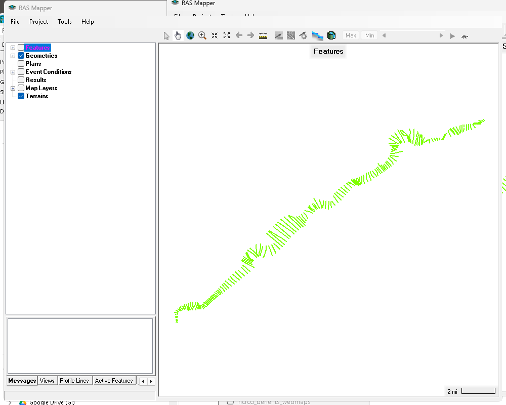
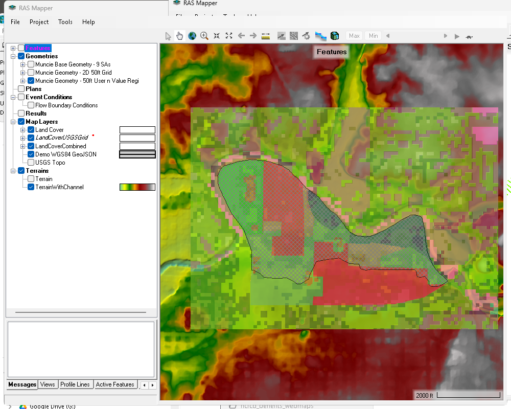
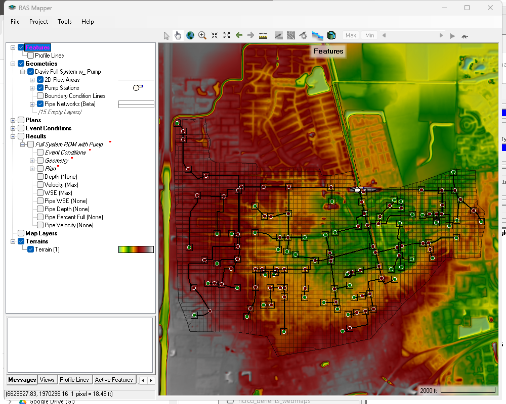
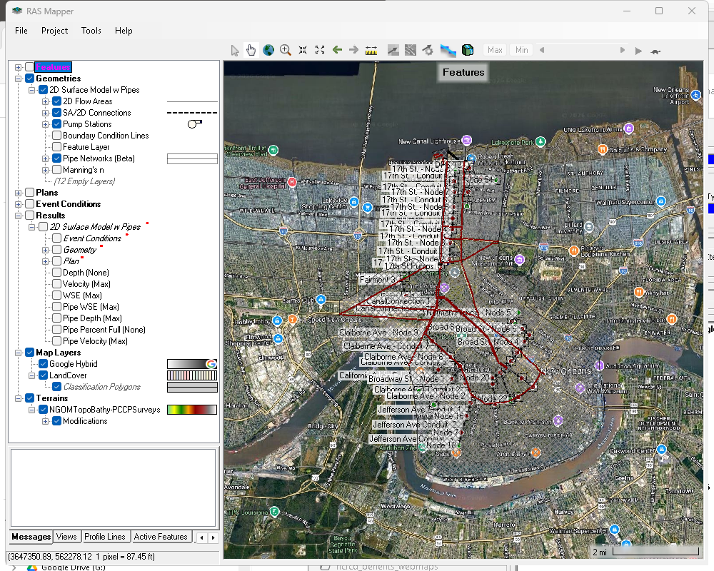

from pathlib import Path
import json
import re
import time
import pandas as pd
from IPython.display import Image, Markdown, display
from ras_commander import RasExamples, RasMap
import ras_commander
pd.set_option("display.max_columns", 80)
pd.set_option("display.max_colwidth", 120)
# RASMapper screenshots require Windows + a local HEC-RAS/RASMapper install.
# Leave this True for the full visual demonstration. Set False for headless runs.
CAPTURE_SNAPSHOTS = True
RAS_VERSION = "6.6"
SNAPSHOT_TIMEOUT_SECONDS = 1800 # 30 minutes for large projects that open slowly.
SNAPSHOT_DELAY_SECONDS = 8
RUN_LOW_LEVEL_CAPTURE = False # Optional extra demo of open/capture/close primitives.
RUN_ROOT = Path.cwd() / "working" / "notebook_runs" / "122_rasmapper_spatial_review"
PROJECT_NAMES = [
"Balde Eagle Creek",
"Muncie",
"BaldEagleCrkMulti2D",
"Davis",
"NewOrleansMetro",
]
print(f"ras-commander: {ras_commander.__version__}")
print(f"Run folder: {RUN_ROOT}")
print(f"Capture snapshots: {CAPTURE_SNAPSHOTS}")
ras-commander: 0.94.0
Run folder: C:\GH\ras-commander\working\notebook_runs\122_rasmapper_spatial_review
Capture snapshots: True
Developer Mode¶
The committed notebook imports ras_commander normally. For local source development, install the repository in editable mode before running:
Generated example projects, screenshots, and review bundles are written under working/notebook_runs/ or each extracted project's RASMapper Screenshots folder, not under examples/.
RASMapper Spatial Review and Screenshot Workflows¶
This notebook demonstrates the RasMap APIs for controlling RASMapper state, launching standalone RasMapper.exe, capturing screenshots, and building repeatable spatial QA/QC evidence bundles.
The examples intentionally use several real RasExamples projects:
- Balde Eagle Creek: 1D cross-section and structure layers.
- Muncie: terrain, land-cover/map layers, 2D flow areas, and structures.
- BaldEagleCrkMulti2D: multiple geometries with differing 2D elements, breaklines, and SA/2D connections.
- Davis: urban storm system with pipes, pumps, storage, and 2D areas.
- NewOrleansMetro: large 2D surface model with pipes, pumps, breaklines, and SA/2D structures.
RasMap.create_spatial_review_package() writes to a project subfolder named RASMapper Screenshots by default. The notebook displays generated PNGs inline after each capture.
API Coverage¶
This notebook touches the main RASMapper automation surface:
- Layer discovery:
parse_rasmap,list_map_layers,list_reference_map_layers,list_basemap_layers,list_standard_basemap_layers,list_terrain_layers,list_landcover_layers,list_soils_layers,list_infiltration_layers,list_geometry_layers,list_result_layers,list_geometry_features. - Layer mutation:
add_reference_map_layer,add_basemap_layer,set_map_layer_visibility,set_terrain_layer_visibility,set_geometry_layer_visibility,set_result_layer_visibility,set_update_legend_with_view. - View and bounds:
get_current_view,set_current_view,get_geometry_layer_bounds,get_geometry_feature_bounds,zoom_to_geometry_layer. - Window/screenshot workflows:
open_rasmapper,capture_rasmapper_snapshot,close_rasmapper, and the higher-levelcreate_spatial_review_package.
RUN_ROOT.mkdir(parents=True, exist_ok=True)
extracted = RasExamples.extract_project(
PROJECT_NAMES,
output_path=RUN_ROOT,
suffix="rasmapper_demo",
)
projects = dict(zip(PROJECT_NAMES, extracted))
project_table = pd.DataFrame(
[
{
"example_name": name,
"project_path": str(path),
"rasmap_files": ", ".join(p.name for p in sorted(Path(path).glob("*.rasmap"))),
}
for name, path in projects.items()
]
)
display(project_table)
2026-04-29 09:00:01 - ras_commander.RasExamples - INFO - Found zip file: C:\Users\billk_clb\AppData\Local\ras-commander\examples\Example_Projects_6_6.zip
2026-04-29 09:00:01 - ras_commander.RasExamples - INFO - Loading project data from CSV...
2026-04-29 09:00:01 - ras_commander.RasExamples - INFO - Loaded 68 projects from CSV.
2026-04-29 09:00:01 - ras_commander.RasExamples - INFO - ----- RasExamples Extracting Project -----
2026-04-29 09:00:01 - ras_commander.RasExamples - INFO - Extracting project 'Balde Eagle Creek' as 'Balde Eagle Creek_rasmapper_demo'
2026-04-29 09:00:01 - ras_commander.RasExamples - INFO - Folder 'Balde Eagle Creek_rasmapper_demo' already exists. Deleting existing folder...
2026-04-29 09:00:01 - ras_commander.RasExamples - INFO - Existing folder 'Balde Eagle Creek_rasmapper_demo' has been deleted.
2026-04-29 09:00:01 - ras_commander.RasExamples - INFO - Successfully extracted project 'Balde Eagle Creek' to C:\GH\ras-commander\working\notebook_runs\122_rasmapper_spatial_review\Balde Eagle Creek_rasmapper_demo
2026-04-29 09:00:01 - ras_commander.RasExamples - INFO - ----- RasExamples Extracting Project -----
2026-04-29 09:00:01 - ras_commander.RasExamples - INFO - Extracting project 'Muncie' as 'Muncie_rasmapper_demo'
2026-04-29 09:00:01 - ras_commander.RasExamples - INFO - Folder 'Muncie_rasmapper_demo' already exists. Deleting existing folder...
2026-04-29 09:00:01 - ras_commander.RasExamples - INFO - Existing folder 'Muncie_rasmapper_demo' has been deleted.
2026-04-29 09:00:02 - ras_commander.RasExamples - INFO - Successfully extracted project 'Muncie' to C:\GH\ras-commander\working\notebook_runs\122_rasmapper_spatial_review\Muncie_rasmapper_demo
2026-04-29 09:00:02 - ras_commander.RasExamples - INFO - ----- RasExamples Extracting Project -----
2026-04-29 09:00:02 - ras_commander.RasExamples - INFO - Extracting project 'BaldEagleCrkMulti2D' as 'BaldEagleCrkMulti2D_rasmapper_demo'
2026-04-29 09:00:02 - ras_commander.RasExamples - INFO - Folder 'BaldEagleCrkMulti2D_rasmapper_demo' already exists. Deleting existing folder...
2026-04-29 09:00:02 - ras_commander.RasExamples - INFO - Existing folder 'BaldEagleCrkMulti2D_rasmapper_demo' has been deleted.
2026-04-29 09:00:03 - ras_commander.RasExamples - INFO - Successfully extracted project 'BaldEagleCrkMulti2D' to C:\GH\ras-commander\working\notebook_runs\122_rasmapper_spatial_review\BaldEagleCrkMulti2D_rasmapper_demo
2026-04-29 09:00:03 - ras_commander.RasExamples - INFO - ----- RasExamples Extracting Project -----
2026-04-29 09:00:03 - ras_commander.RasExamples - INFO - Extracting project 'Davis' as 'Davis_rasmapper_demo'
2026-04-29 09:00:03 - ras_commander.RasExamples - INFO - Folder 'Davis_rasmapper_demo' already exists. Deleting existing folder...
2026-04-29 09:00:03 - ras_commander.RasExamples - INFO - Existing folder 'Davis_rasmapper_demo' has been deleted.
2026-04-29 09:00:03 - ras_commander.RasExamples - INFO - Successfully extracted project 'Davis' to C:\GH\ras-commander\working\notebook_runs\122_rasmapper_spatial_review\Davis_rasmapper_demo
2026-04-29 09:00:03 - ras_commander.RasExamples - INFO - ----- RasExamples Extracting Special Project -----
2026-04-29 09:00:03 - ras_commander.RasExamples - INFO - Extracting special project 'NewOrleansMetro' as 'NewOrleansMetro_rasmapper_demo'
2026-04-29 09:00:03 - ras_commander.RasExamples - INFO - Folder 'NewOrleansMetro_rasmapper_demo' already exists. Deleting existing folder...
2026-04-29 09:00:03 - ras_commander.RasExamples - INFO - Existing folder 'NewOrleansMetro_rasmapper_demo' has been deleted.
2026-04-29 09:00:03 - ras_commander.RasExamples - INFO - Downloading special project from: https://www.hec.usace.army.mil/confluence/rasdocs/hgt/files/latest/299502039/299502111/1/1747692522764/NewOrleansMetroPipesExample.zip
2026-04-29 09:00:03 - ras_commander.RasExamples - INFO - This may take a few moments...
2026-04-29 09:00:10 - ras_commander.RasExamples - INFO - Downloaded special project zip file to C:\GH\ras-commander\working\notebook_runs\122_rasmapper_spatial_review\NewOrleansMetro_rasmapper_demo_temp.zip
2026-04-29 09:00:11 - ras_commander.RasExamples - INFO - Successfully extracted special project 'NewOrleansMetro' to C:\GH\ras-commander\working\notebook_runs\122_rasmapper_spatial_review\NewOrleansMetro_rasmapper_demo
| example_name | project_path | rasmap_files | |
|---|---|---|---|
| 0 | Balde Eagle Creek | C:\GH\ras-commander\working\notebook_runs\122_rasmapper_spatial_review\Balde Eagle Creek_rasmapper_demo | BaldEagle.rasmap |
| 1 | Muncie | C:\GH\ras-commander\working\notebook_runs\122_rasmapper_spatial_review\Muncie_rasmapper_demo | Muncie.rasmap |
| 2 | BaldEagleCrkMulti2D | C:\GH\ras-commander\working\notebook_runs\122_rasmapper_spatial_review\BaldEagleCrkMulti2D_rasmapper_demo | BaldEagleDamBrk.rasmap |
| 3 | Davis | C:\GH\ras-commander\working\notebook_runs\122_rasmapper_spatial_review\Davis_rasmapper_demo | DavisStormSystem.rasmap |
| 4 | NewOrleansMetro | C:\GH\ras-commander\working\notebook_runs\122_rasmapper_spatial_review\NewOrleansMetro_rasmapper_demo | NewOrleansMetro.rasmap |
def slugify(value: str) -> str:
return re.sub(r"[^A-Za-z0-9_.-]+", "_", value).strip("_")
def compact_display(df: pd.DataFrame, columns=None, max_rows: int = 12):
if df is None or df.empty:
display(pd.DataFrame())
return
view = df.copy()
if columns is not None:
view = view[[c for c in columns if c in view.columns]]
display(view.head(max_rows))
def first_terrain_name(project_path: Path, preferred: str | None = None) -> str | None:
terrains = RasMap.list_terrain_layers(project_path)
if terrains.empty:
return None
if preferred and preferred in set(terrains["name"]):
return preferred
checked = terrains.loc[terrains["checked"].fillna(False)]
if not checked.empty:
return checked.iloc[0]["name"]
return terrains.iloc[0]["name"]
def maybe_map_category(project_path: Path, preferred):
layers = RasMap.list_map_layers(project_path)
if layers.empty:
return None
categories = set(layers["category"].dropna())
preferred_values = [preferred] if isinstance(preferred, str) else list(preferred or [])
selected = [value for value in preferred_values if value in categories]
return selected or None
def display_snapshot(state: dict):
snapshot = state.get("snapshot", {})
path = snapshot.get("path")
if path and snapshot.get("created"):
display(Markdown(f"**Screenshot:** `{path}`"))
display(Image(filename=path))
else:
display(Markdown(
"No screenshot was created. "
f"Requested: `{snapshot.get('requested')}`; error: `{snapshot.get('error')}`"
))
def create_demo_review(
project_name: str,
*,
title: str,
geometry_number: str,
layer_type,
terrain_name: str | None = None,
feature_index: int | None = None,
map_layer_category=None,
include_results: bool = False,
include_map_layers: bool = False,
) -> dict:
project_path = Path(projects[project_name])
snapshot_filename = f"{slugify(title)}.png"
state = RasMap.create_spatial_review_package(
project_path,
geometry_number=geometry_number,
layer_type=layer_type,
feature_index=feature_index,
terrain_name=terrain_name,
map_layer_category=map_layer_category,
include_results=include_results,
include_map_layers=include_map_layers,
capture_snapshot=CAPTURE_SNAPSHOTS,
snapshot_filename=snapshot_filename,
delay_seconds=SNAPSHOT_DELAY_SECONDS,
snapshot_timeout_seconds=SNAPSHOT_TIMEOUT_SECONDS,
ras_version=RAS_VERSION,
require_snapshot=False,
)
assert Path(state["output_dir"]).name == "RASMapper Screenshots"
display(Markdown(f"### {title}"))
display(Markdown(f"Project: `{project_path}`"))
display(Markdown(f"Review folder: `{state['output_dir']}`"))
display(pd.DataFrame(state["preflight"])[["code", "passed", "message"]])
display_snapshot(state)
return state
Project Inventory¶
Start by reading the .rasmap files into DataFrames. This gives a model-by-model catalog of terrain, map layers, land-cover/infiltration/soils layers, geometry elements, result layers, and current view state.
inventory_rows = []
catalogs = {}
for name, project_path in projects.items():
project_path = Path(project_path)
rasmap_df = RasMap.parse_rasmap(project_path / next(project_path.glob("*.rasmap")).name)
map_layers = RasMap.list_map_layers(project_path)
terrain_layers = RasMap.list_terrain_layers(project_path)
landcover_layers = RasMap.list_landcover_layers(project_path)
soils_layers = RasMap.list_soils_layers(project_path)
infiltration_layers = RasMap.list_infiltration_layers(project_path)
geometry_layers = RasMap.list_geometry_layers(project_path)
result_layers = RasMap.list_result_layers(project_path)
current_view = RasMap.get_current_view(project_path)
catalogs[name] = {
"rasmap_df": rasmap_df,
"map_layers": map_layers,
"terrain_layers": terrain_layers,
"landcover_layers": landcover_layers,
"soils_layers": soils_layers,
"infiltration_layers": infiltration_layers,
"geometry_layers": geometry_layers,
"result_layers": result_layers,
"current_view": current_view,
}
inventory_rows.append(
{
"project": name,
"terrains": len(terrain_layers),
"map_layers": len(map_layers),
"reference_layers": int((map_layers.get("category", pd.Series(dtype=str)) == "reference").sum()) if not map_layers.empty else 0,
"basemaps": int((map_layers.get("category", pd.Series(dtype=str)) == "basemap").sum()) if not map_layers.empty else 0,
"landcover_layers": len(landcover_layers),
"soils_layers": len(soils_layers),
"infiltration_layers": len(infiltration_layers),
"geometry_tree_rows": len(geometry_layers),
"result_tree_rows": len(result_layers),
"current_view_min_x": current_view.get("min_x"),
"current_view_max_x": current_view.get("max_x"),
}
)
inventory = pd.DataFrame(inventory_rows)
display(inventory)
2026-04-29 09:00:11 - ras_commander.RasMap - INFO - Successfully parsed RASMapper file: C:\GH\ras-commander\working\notebook_runs\122_rasmapper_spatial_review\Balde Eagle Creek_rasmapper_demo\BaldEagle.rasmap
2026-04-29 09:00:11 - ras_commander.RasMap - INFO - Found 0 map layers in .rasmap
2026-04-29 09:00:11 - ras_commander.RasMap - INFO - Successfully parsed RASMapper file: C:\GH\ras-commander\working\notebook_runs\122_rasmapper_spatial_review\Muncie_rasmapper_demo\Muncie.rasmap
2026-04-29 09:00:11 - ras_commander.RasMap - INFO - Found 3 map layers in .rasmap
2026-04-29 09:00:11 - ras_commander.RasMap - INFO - Successfully parsed RASMapper file: C:\GH\ras-commander\working\notebook_runs\122_rasmapper_spatial_review\BaldEagleCrkMulti2D_rasmapper_demo\BaldEagleDamBrk.rasmap
2026-04-29 09:00:11 - ras_commander.RasMap - INFO - Found 4 map layers in .rasmap
2026-04-29 09:00:11 - ras_commander.RasMap - INFO - Successfully parsed RASMapper file: C:\GH\ras-commander\working\notebook_runs\122_rasmapper_spatial_review\Davis_rasmapper_demo\DavisStormSystem.rasmap
2026-04-29 09:00:11 - ras_commander.RasMap - INFO - Found 0 map layers in .rasmap
2026-04-29 09:00:11 - ras_commander.RasMap - INFO - Successfully parsed RASMapper file: C:\GH\ras-commander\working\notebook_runs\122_rasmapper_spatial_review\NewOrleansMetro_rasmapper_demo\NewOrleansMetro.rasmap
2026-04-29 09:00:11 - ras_commander.RasMap - INFO - Found 2 map layers in .rasmap
| project | terrains | map_layers | reference_layers | basemaps | landcover_layers | soils_layers | infiltration_layers | geometry_tree_rows | result_tree_rows | current_view_min_x | current_view_max_x | |
|---|---|---|---|---|---|---|---|---|---|---|---|---|
| 0 | Balde Eagle Creek | 0 | 0 | 0 | 0 | 0 | 0 | 0 | 27 | 0 | 1.967609e+06 | 2.065322e+06 |
| 1 | Muncie | 2 | 3 | 0 | 0 | 3 | 0 | 0 | 96 | 0 | 4.028388e+05 | 4.130636e+05 |
| 2 | BaldEagleCrkMulti2D | 1 | 4 | 0 | 1 | 1 | 1 | 1 | 305 | 0 | 1.944200e+06 | 2.139981e+06 |
| 3 | Davis | 1 | 0 | 0 | 0 | 0 | 0 | 0 | 39 | 47 | 6.625914e+06 | 6.646810e+06 |
| 4 | NewOrleansMetro | 1 | 2 | 0 | 1 | 1 | 0 | 0 | 40 | 49 | 3.658821e+06 | 3.685485e+06 |
for name in PROJECT_NAMES:
display(Markdown(f"### {name}: geometry elements"))
geometry_layers = catalogs[name]["geometry_layers"]
compact_display(
geometry_layers.loc[geometry_layers["category"].eq("geometry_element")],
columns=["geometry_number", "geometry_name", "layer_name", "layer_type", "checked", "geometry_hdf_exists"],
max_rows=20,
)
Balde Eagle Creek: geometry elements¶
| geometry_number | geometry_name | layer_name | layer_type | checked | geometry_hdf_exists | |
|---|---|---|---|---|---|---|
| 1 | 01 | Existing Conditions - GIS Data | RASXS | None | True | |
| 2 | 01 | Existing Conditions - GIS Data | Culvert Groups | VirtualGeometryFeatureLayer | None | True |
| 3 | 01 | Existing Conditions - GIS Data | Culvert Barrels | VirtualGeometryFeatureLayer | None | True |
| 4 | 01 | Existing Conditions - GIS Data | Gate Groups | VirtualGeometryFeatureLayer | None | True |
| 5 | 01 | Existing Conditions - GIS Data | Gate Openings | VirtualGeometryFeatureLayer | None | True |
| 6 | 01 | Existing Conditions - GIS Data | Culvert Groups | VirtualGeometryFeatureLayer | None | True |
| 7 | 01 | Existing Conditions - GIS Data | Culvert Barrels | VirtualGeometryFeatureLayer | None | True |
| 8 | 01 | Existing Conditions - GIS Data | Rating Curve Outlets | VirtualGeometryFeatureLayer | None | True |
| 9 | 01 | Existing Conditions - GIS Data | Outlet Time Series | VirtualGeometryFeatureLayer | None | True |
| 10 | 01 | Existing Conditions - GIS Data | Gate Groups | VirtualGeometryFeatureLayer | None | True |
| 11 | 01 | Existing Conditions - GIS Data | Gate Openings | VirtualGeometryFeatureLayer | None | True |
| 12 | 01 | Existing Conditions - GIS Data | Culvert Groups | VirtualGeometryFeatureLayer | None | True |
| 13 | 01 | Existing Conditions - GIS Data | Culvert Barrels | VirtualGeometryFeatureLayer | None | True |
| 14 | 01 | Existing Conditions - GIS Data | Rating Curve Outlets | VirtualGeometryFeatureLayer | None | True |
| 15 | 01 | Existing Conditions - GIS Data | Outlet Time Series | VirtualGeometryFeatureLayer | None | True |
| 16 | 01 | Existing Conditions - GIS Data | Gate Groups | VirtualGeometryFeatureLayer | None | True |
| 17 | 01 | Existing Conditions - GIS Data | Gate Openings | VirtualGeometryFeatureLayer | None | True |
| 18 | 01 | Existing Conditions - GIS Data | Culvert Groups | VirtualGeometryFeatureLayer | None | True |
| 19 | 01 | Existing Conditions - GIS Data | Culvert Barrels | VirtualGeometryFeatureLayer | None | True |
| 20 | 01 | Existing Conditions - GIS Data | Rating Curve Outlets | VirtualGeometryFeatureLayer | None | True |
Muncie: geometry elements¶
| geometry_number | geometry_name | layer_name | layer_type | checked | geometry_hdf_exists | |
|---|---|---|---|---|---|---|
| 1 | 01 | Muncie Base Geometry - 9 SAs | RASRiver | True | True | |
| 2 | 01 | Muncie Base Geometry - 9 SAs | RASBankLines | True | True | |
| 3 | 01 | Muncie Base Geometry - 9 SAs | RASXS | True | True | |
| 4 | 01 | Muncie Base Geometry - 9 SAs | RASEdgeLines | True | True | |
| 5 | 01 | Muncie Base Geometry - 9 SAs | MeshPerimeterLayer | None | True | |
| 6 | 01 | Muncie Base Geometry - 9 SAs | Culvert Groups | VirtualGeometryFeatureLayer | None | True |
| 7 | 01 | Muncie Base Geometry - 9 SAs | Culvert Barrels | VirtualGeometryFeatureLayer | None | True |
| 8 | 01 | Muncie Base Geometry - 9 SAs | Gate Groups | VirtualGeometryFeatureLayer | None | True |
| 9 | 01 | Muncie Base Geometry - 9 SAs | Gate Openings | VirtualGeometryFeatureLayer | None | True |
| 10 | 01 | Muncie Base Geometry - 9 SAs | Culvert Groups | VirtualGeometryFeatureLayer | None | True |
| 11 | 01 | Muncie Base Geometry - 9 SAs | Culvert Barrels | VirtualGeometryFeatureLayer | None | True |
| 12 | 01 | Muncie Base Geometry - 9 SAs | Rating Curve Outlets | VirtualGeometryFeatureLayer | None | True |
| 13 | 01 | Muncie Base Geometry - 9 SAs | Outlet Time Series | VirtualGeometryFeatureLayer | None | True |
| 14 | 01 | Muncie Base Geometry - 9 SAs | Gate Groups | VirtualGeometryFeatureLayer | None | True |
| 15 | 01 | Muncie Base Geometry - 9 SAs | Gate Openings | VirtualGeometryFeatureLayer | None | True |
| 16 | 01 | Muncie Base Geometry - 9 SAs | Culvert Groups | VirtualGeometryFeatureLayer | None | True |
| 17 | 01 | Muncie Base Geometry - 9 SAs | Culvert Barrels | VirtualGeometryFeatureLayer | None | True |
| 18 | 01 | Muncie Base Geometry - 9 SAs | Rating Curve Outlets | VirtualGeometryFeatureLayer | None | True |
| 19 | 01 | Muncie Base Geometry - 9 SAs | Outlet Time Series | VirtualGeometryFeatureLayer | None | True |
| 20 | 01 | Muncie Base Geometry - 9 SAs | Gate Groups | VirtualGeometryFeatureLayer | None | True |
BaldEagleCrkMulti2D: geometry elements¶
| geometry_number | geometry_name | layer_name | layer_type | checked | geometry_hdf_exists | |
|---|---|---|---|---|---|---|
| 1 | 06 | Bald Eagle Multi 2D Areas | RASRiver | True | True | |
| 2 | 06 | Bald Eagle Multi 2D Areas | RASJunction | True | True | |
| 3 | 06 | Bald Eagle Multi 2D Areas | XS | RASXS | True | True |
| 4 | 06 | Bald Eagle Multi 2D Areas | RASStorageArea | True | True | |
| 5 | 06 | Bald Eagle Multi 2D Areas | RASD2FlowArea | True | True | |
| 6 | 06 | Bald Eagle Multi 2D Areas | MeshPerimeterLayer | None | True | |
| 7 | 06 | Bald Eagle Multi 2D Areas | Culvert Groups | VirtualGeometryFeatureLayer | None | True |
| 8 | 06 | Bald Eagle Multi 2D Areas | Culvert Barrels | VirtualGeometryFeatureLayer | None | True |
| 9 | 06 | Bald Eagle Multi 2D Areas | Gate Groups | VirtualGeometryFeatureLayer | None | True |
| 10 | 06 | Bald Eagle Multi 2D Areas | Gate Openings | VirtualGeometryFeatureLayer | None | True |
| 11 | 06 | Bald Eagle Multi 2D Areas | Culvert Groups | VirtualGeometryFeatureLayer | None | True |
| 12 | 06 | Bald Eagle Multi 2D Areas | Culvert Barrels | VirtualGeometryFeatureLayer | None | True |
| 13 | 06 | Bald Eagle Multi 2D Areas | Rating Curve Outlets | VirtualGeometryFeatureLayer | None | True |
| 14 | 06 | Bald Eagle Multi 2D Areas | Outlet Time Series | VirtualGeometryFeatureLayer | None | True |
| 15 | 06 | Bald Eagle Multi 2D Areas | Gate Groups | VirtualGeometryFeatureLayer | None | True |
| 16 | 06 | Bald Eagle Multi 2D Areas | Gate Openings | VirtualGeometryFeatureLayer | None | True |
| 17 | 06 | Bald Eagle Multi 2D Areas | Culvert Groups | VirtualGeometryFeatureLayer | None | True |
| 18 | 06 | Bald Eagle Multi 2D Areas | Culvert Barrels | VirtualGeometryFeatureLayer | None | True |
| 19 | 06 | Bald Eagle Multi 2D Areas | Rating Curve Outlets | VirtualGeometryFeatureLayer | None | True |
| 20 | 06 | Bald Eagle Multi 2D Areas | Outlet Time Series | VirtualGeometryFeatureLayer | None | True |
Davis: geometry elements¶
| geometry_number | geometry_name | layer_name | layer_type | checked | geometry_hdf_exists | |
|---|---|---|---|---|---|---|
| 1 | 02 | Davis Full System w_ Pump | RASRiver | None | True | |
| 2 | 02 | Davis Full System w_ Pump | RASJunction | None | True | |
| 3 | 02 | Davis Full System w_ Pump | RASXS | None | True | |
| 4 | 02 | Davis Full System w_ Pump | RASStorageArea | None | True | |
| 5 | 02 | Davis Full System w_ Pump | RASD2FlowArea | True | True | |
| 6 | 02 | Davis Full System w_ Pump | MeshPerimeterLayer | True | True | |
| 7 | 02 | Davis Full System w_ Pump | MeshPointLayer | True | True | |
| 8 | 02 | Davis Full System w_ Pump | Culvert Groups | VirtualGeometryFeatureLayer | None | True |
| 9 | 02 | Davis Full System w_ Pump | Culvert Barrels | VirtualGeometryFeatureLayer | None | True |
| 10 | 02 | Davis Full System w_ Pump | Gate Groups | VirtualGeometryFeatureLayer | None | True |
| 11 | 02 | Davis Full System w_ Pump | Gate Openings | VirtualGeometryFeatureLayer | None | True |
| 12 | 02 | Davis Full System w_ Pump | Culvert Groups | VirtualGeometryFeatureLayer | None | True |
| 13 | 02 | Davis Full System w_ Pump | Culvert Barrels | VirtualGeometryFeatureLayer | None | True |
| 14 | 02 | Davis Full System w_ Pump | Rating Curve Outlets | VirtualGeometryFeatureLayer | None | True |
| 15 | 02 | Davis Full System w_ Pump | Outlet Time Series | VirtualGeometryFeatureLayer | None | True |
| 16 | 02 | Davis Full System w_ Pump | Gate Groups | VirtualGeometryFeatureLayer | None | True |
| 17 | 02 | Davis Full System w_ Pump | Gate Openings | VirtualGeometryFeatureLayer | None | True |
| 18 | 02 | Davis Full System w_ Pump | Culvert Groups | VirtualGeometryFeatureLayer | None | True |
| 19 | 02 | Davis Full System w_ Pump | Culvert Barrels | VirtualGeometryFeatureLayer | None | True |
| 20 | 02 | Davis Full System w_ Pump | Rating Curve Outlets | VirtualGeometryFeatureLayer | None | True |
NewOrleansMetro: geometry elements¶
| geometry_number | geometry_name | layer_name | layer_type | checked | geometry_hdf_exists | |
|---|---|---|---|---|---|---|
| 1 | 02 | 2D Surface Model w Pipes | RASRiver | None | True | |
| 2 | 02 | 2D Surface Model w Pipes | RASJunction | None | True | |
| 3 | 02 | 2D Surface Model w Pipes | RASXS | None | True | |
| 4 | 02 | 2D Surface Model w Pipes | RASStorageArea | None | True | |
| 5 | 02 | 2D Surface Model w Pipes | RASD2FlowArea | True | True | |
| 6 | 02 | 2D Surface Model w Pipes | MeshPerimeterLayer | None | True | |
| 7 | 02 | 2D Surface Model w Pipes | RASBreakLines | True | True | |
| 8 | 02 | 2D Surface Model w Pipes | Culvert Groups | VirtualGeometryFeatureLayer | None | True |
| 9 | 02 | 2D Surface Model w Pipes | Culvert Barrels | VirtualGeometryFeatureLayer | None | True |
| 10 | 02 | 2D Surface Model w Pipes | Gate Groups | VirtualGeometryFeatureLayer | None | True |
| 11 | 02 | 2D Surface Model w Pipes | Gate Openings | VirtualGeometryFeatureLayer | None | True |
| 12 | 02 | 2D Surface Model w Pipes | Culvert Groups | VirtualGeometryFeatureLayer | None | True |
| 13 | 02 | 2D Surface Model w Pipes | Culvert Barrels | VirtualGeometryFeatureLayer | None | True |
| 14 | 02 | 2D Surface Model w Pipes | Rating Curve Outlets | VirtualGeometryFeatureLayer | None | True |
| 15 | 02 | 2D Surface Model w Pipes | Outlet Time Series | VirtualGeometryFeatureLayer | None | True |
| 16 | 02 | 2D Surface Model w Pipes | Gate Groups | VirtualGeometryFeatureLayer | None | True |
| 17 | 02 | 2D Surface Model w Pipes | Gate Openings | VirtualGeometryFeatureLayer | None | True |
| 18 | 02 | 2D Surface Model w Pipes | Culvert Groups | VirtualGeometryFeatureLayer | None | True |
| 19 | 02 | 2D Surface Model w Pipes | Culvert Barrels | VirtualGeometryFeatureLayer | None | True |
| 20 | 02 | 2D Surface Model w Pipes | Rating Curve Outlets | VirtualGeometryFeatureLayer | None | True |
Map Layers: Add, List, Validate, and Toggle¶
The Muncie example is a convenient place to demonstrate map-layer management. The notebook creates a tiny WGS84 GeoJSON reference layer, rejects a projected GeoJSON, adds a standard basemap, and then uses layer-state controls to build figure context.
muncie = Path(projects["Muncie"])
gis_dir = muncie / "GIS_Data"
gis_dir.mkdir(exist_ok=True)
good_geojson = gis_dir / "rasmapper_demo_wgs84.geojson"
good_geojson.write_text(
json.dumps(
{
"type": "FeatureCollection",
"features": [
{
"type": "Feature",
"properties": {"name": "RASMapper demo polygon"},
"geometry": {
"type": "Polygon",
"coordinates": [[
[-85.43, 40.18],
[-85.42, 40.18],
[-85.42, 40.19],
[-85.43, 40.19],
[-85.43, 40.18],
]],
},
}
],
}
),
encoding="utf-8",
)
bad_geojson = gis_dir / "rasmapper_demo_projected.geojson"
bad_geojson.write_text(
json.dumps(
{
"type": "FeatureCollection",
"crs": {"type": "name", "properties": {"name": "EPSG:3857"}},
"features": [
{
"type": "Feature",
"properties": {"name": "Projected demo polygon"},
"geometry": {
"type": "Polygon",
"coordinates": [[[1000000, 5000000], [1001000, 5000000], [1001000, 5001000], [1000000, 5001000], [1000000, 5000000]]],
},
}
],
}
),
encoding="utf-8",
)
display(RasMap.list_standard_basemap_layers())
RasMap.add_reference_map_layer(muncie, good_geojson, layer_name="Demo WGS84 GeoJSON")
try:
RasMap.add_reference_map_layer(muncie, bad_geojson, layer_name="Demo Projected GeoJSON")
except ValueError as exc:
display(Markdown(f"Projected GeoJSON rejected as expected: `{exc}`"))
RasMap.add_basemap_layer(muncie, "USGS Topo", checked=True)
display(Markdown("### Muncie map layers after edits"))
compact_display(
RasMap.list_map_layers(muncie),
columns=["name", "type", "category", "checked", "filename", "resolved_path", "exists"],
max_rows=30,
)
display(Markdown("### Reference layers"))
compact_display(RasMap.list_reference_map_layers(muncie), columns=["name", "type", "checked", "resolved_path", "exists"])
display(Markdown("### Basemap layers"))
compact_display(RasMap.list_basemap_layers(muncie), columns=["name", "type", "checked", "filename", "is_standard_basemap"])
| name | type | filename | resample_method | |
|---|---|---|---|---|
| 0 | Google Hybrid | WMSLayer | %LocalAppData%\HEC\Mapping\5.1\XML\Google Hybrid.xml | near |
| 1 | Bing Satellite | WMSLayer | %LocalAppData%\HEC\Mapping\5.1\XML\Bing Satellite.xml | near |
| 2 | ArcGIS NatGeo World Map | WMSLayer | %LocalAppData%\HEC\Mapping\5.1\XML\ArcGIS NatGeo World Map.xml | near |
| 3 | ArcGIS USA Topo Maps | WMSLayer | %LocalAppData%\HEC\Mapping\5.1\XML\ArcGIS USA Topo Maps.xml | near |
| 4 | Google Terrain Streets Water | WMSLayer | %LocalAppData%\HEC\Mapping\5.1\XML\Google Terrain Streets Water.xml | near |
| 5 | OpenStreetMaps | WMSLayer | %LocalAppData%\HEC\Mapping\5.1\XML\OpenStreetMaps.xml | near |
| 6 | USGS Imagery | WMSLayer | %LocalAppData%\HEC\Mapping\5.1\XML\USGS Imagery.xml | near |
| 7 | USGS Topo | WMSLayer | %LocalAppData%\HEC\Mapping\5.1\XML\USGS Topo.xml | near |
2026-04-29 09:00:11 - ras_commander._rasmap_layer_helper - INFO - Added reference map layer 'Demo WGS84 GeoJSON' to C:\GH\ras-commander\working\notebook_runs\122_rasmapper_spatial_review\Muncie_rasmapper_demo\Muncie.rasmap
Projected GeoJSON rejected as expected: GeoJSON source must be WGS84/EPSG:4326 for RASMapper: C:\GH\ras-commander\working\notebook_runs\122_rasmapper_spatial_review\Muncie_rasmapper_demo\GIS_Data\rasmapper_demo_projected.geojson. Coordinate bounds look projected, not lon/lat: (1000000.0, 5000000.0, 1001000.0, 5001000.0)
2026-04-29 09:00:11 - ras_commander._rasmap_layer_helper - INFO - Added basemap layer 'USGS Topo' to C:\GH\ras-commander\working\notebook_runs\122_rasmapper_spatial_review\Muncie_rasmapper_demo\Muncie.rasmap
Muncie map layers after edits¶
2026-04-29 09:00:11 - ras_commander.RasMap - INFO - Found 5 map layers in .rasmap
| name | type | category | checked | filename | resolved_path | exists | |
|---|---|---|---|---|---|---|---|
| 0 | Land Cover | LandCoverLayer | land_classification | False | .\LandCover\LandCoverUserShapefile.hdf | C:\GH\ras-commander\working\notebook_runs\122_rasmapper_spatial_review\Muncie_rasmapper_demo\LandCover\LandCoverUser... | True |
| 1 | LandCoverUSGSGrid | LandCoverLayer | land_classification | False | .\LandCover\LandCoverUSGSGrid.hdf | C:\GH\ras-commander\working\notebook_runs\122_rasmapper_spatial_review\Muncie_rasmapper_demo\LandCover\LandCoverUSGS... | True |
| 2 | LandCoverCombined | LandCoverLayer | land_classification | False | .\LandCover\LandCoverCombined.hdf | C:\GH\ras-commander\working\notebook_runs\122_rasmapper_spatial_review\Muncie_rasmapper_demo\LandCover\LandCoverComb... | True |
| 3 | Demo WGS84 GeoJSON | PolygonFeatureLayer | reference | True | .\GIS_Data\rasmapper_demo_wgs84.geojson | C:\GH\ras-commander\working\notebook_runs\122_rasmapper_spatial_review\Muncie_rasmapper_demo\GIS_Data\rasmapper_demo... | True |
| 4 | USGS Topo | WMSLayer | basemap | True | %LocalAppData%\HEC\Mapping\5.1\XML\USGS Topo.xml | C:\Users\billk_clb\AppData\Local\HEC\Mapping\5.1\XML\USGS Topo.xml | True |
Reference layers¶
| name | type | checked | resolved_path | exists | |
|---|---|---|---|---|---|
| 3 | Demo WGS84 GeoJSON | PolygonFeatureLayer | True | C:\GH\ras-commander\working\notebook_runs\122_rasmapper_spatial_review\Muncie_rasmapper_demo\GIS_Data\rasmapper_demo... | True |
Basemap layers¶
| name | type | checked | filename | is_standard_basemap | |
|---|---|---|---|---|---|
| 4 | USGS Topo | WMSLayer | True | %LocalAppData%\HEC\Mapping\5.1\XML\USGS Topo.xml | True |
# Visibility controls are useful before launching RASMapper for figures.
RasMap.set_map_layer_visibility(muncie, checked=False)
RasMap.set_map_layer_visibility(muncie, category=["land_classification", "reference"], checked=True, exclusive=True)
RasMap.set_terrain_layer_visibility(muncie, terrain_name=first_terrain_name(muncie, "TerrainWithChannel"), checked=True, exclusive=True)
RasMap.set_update_legend_with_view(muncie, include_map_layers=True)
display(Markdown("### Visible map layers after figure-state setup"))
visible_maps = RasMap.list_map_layers(muncie)
compact_display(
visible_maps.loc[visible_maps["checked"].fillna(False)],
columns=["name", "category", "type", "checked"],
max_rows=30,
)
Visible map layers after figure-state setup¶
2026-04-29 09:00:11 - ras_commander.RasMap - INFO - Found 5 map layers in .rasmap
| name | category | type | checked | |
|---|---|---|---|---|
| 0 | Land Cover | land_classification | LandCoverLayer | True |
| 1 | LandCoverUSGSGrid | land_classification | LandCoverLayer | True |
| 2 | LandCoverCombined | land_classification | LandCoverLayer | True |
| 3 | Demo WGS84 GeoJSON | reference | PolygonFeatureLayer | True |
# Give the 1D Bald Eagle Creek screenshot a standard basemap for visual context.
# The other examples already have useful terrain or map context, so leave them unchanged.
balde_eagle = Path(projects["Balde Eagle Creek"])
if RasMap.list_basemap_layers(balde_eagle).empty:
RasMap.add_basemap_layer(balde_eagle, "USGS Topo", checked=False)
basemap_summary = []
for name, project_path in projects.items():
basemaps = RasMap.list_basemap_layers(project_path)
basemap_summary.append({"project": name, "basemap_count": len(basemaps), "basemap_names": basemaps["name"].tolist() if not basemaps.empty else []})
display(pd.DataFrame(basemap_summary))
2026-04-29 09:00:11 - ras_commander._rasmap_layer_helper - INFO - Added basemap layer 'USGS Topo' to C:\GH\ras-commander\working\notebook_runs\122_rasmapper_spatial_review\Balde Eagle Creek_rasmapper_demo\BaldEagle.rasmap
| project | basemap_count | basemap_names | |
|---|---|---|---|
| 0 | Balde Eagle Creek | 1 | [USGS Topo] |
| 1 | Muncie | 1 | [USGS Topo] |
| 2 | BaldEagleCrkMulti2D | 1 | [Google Hybrid] |
| 3 | Davis | 0 | [] |
| 4 | NewOrleansMetro | 1 | [Google Hybrid] |
Bounds and Feature Discovery¶
Geometry-layer screenshots are driven from compiled geometry HDF extents. Feature selectors do not hide individual features; they only center the view on one feature and zoom out for context.
multi2d = Path(projects["BaldEagleCrkMulti2D"])
multi_layers = RasMap.list_geometry_layers(multi2d)
multi_g03 = multi_layers.loc[
(multi_layers["geometry_number"] == "03")
& (multi_layers["category"] == "geometry_element")
]
display(multi_g03[["layer_id", "layer_name", "layer_type", "checked", "geometry_hdf_path"]])
g03_hdf = Path(multi_g03["geometry_hdf_path"].dropna().iloc[0])
for layer_type in ["RASD2FlowArea", "RASBreakLines", "SA2DStructureLayer", "RASXS"]:
bounds = RasMap.get_geometry_layer_bounds(g03_hdf, layer_type=layer_type)
display(Markdown(f"**{layer_type} bounds**"))
display(pd.DataFrame([bounds]))
features = RasMap.list_geometry_features(g03_hdf, layer_type=layer_type)
compact_display(features, columns=["layer_type", "feature_index", "feature_name", "feature_type", "min_x", "min_y", "max_x", "max_y"], max_rows=8)
| layer_id | layer_name | layer_type | checked | geometry_hdf_path | |
|---|---|---|---|---|---|
| 244 | geometry:8:layer:0:RASXS | RASXS | None | C:\GH\ras-commander\working\notebook_runs\122_rasmapper_spatial_review\BaldEagleCrkMulti2D_rasmapper_demo\BaldEagleD... | |
| 245 | geometry:8:layer:1:RASD2FlowArea | RASD2FlowArea | True | C:\GH\ras-commander\working\notebook_runs\122_rasmapper_spatial_review\BaldEagleCrkMulti2D_rasmapper_demo\BaldEagleD... | |
| 246 | geometry:8:layer:2:MeshPerimeterLayer | MeshPerimeterLayer | None | C:\GH\ras-commander\working\notebook_runs\122_rasmapper_spatial_review\BaldEagleCrkMulti2D_rasmapper_demo\BaldEagleD... | |
| 247 | geometry:8:layer:3:MeshPointLayer | MeshPointLayer | True | C:\GH\ras-commander\working\notebook_runs\122_rasmapper_spatial_review\BaldEagleCrkMulti2D_rasmapper_demo\BaldEagleD... | |
| 248 | geometry:8:layer:4:RASBreakLines | RASBreakLines | True | C:\GH\ras-commander\working\notebook_runs\122_rasmapper_spatial_review\BaldEagleCrkMulti2D_rasmapper_demo\BaldEagleD... | |
| 249 | geometry:8:layer:5:MeshRegionLayer | MeshRegionLayer | True | C:\GH\ras-commander\working\notebook_runs\122_rasmapper_spatial_review\BaldEagleCrkMulti2D_rasmapper_demo\BaldEagleD... | |
| 250 | geometry:8:layer:6:VirtualGeometryFeatureLayer:Culvert Groups | Culvert Groups | VirtualGeometryFeatureLayer | None | C:\GH\ras-commander\working\notebook_runs\122_rasmapper_spatial_review\BaldEagleCrkMulti2D_rasmapper_demo\BaldEagleD... |
| 251 | geometry:8:layer:7:VirtualGeometryFeatureLayer:Culvert Barrels | Culvert Barrels | VirtualGeometryFeatureLayer | None | C:\GH\ras-commander\working\notebook_runs\122_rasmapper_spatial_review\BaldEagleCrkMulti2D_rasmapper_demo\BaldEagleD... |
| 252 | geometry:8:layer:8:VirtualGeometryFeatureLayer:Gate Groups | Gate Groups | VirtualGeometryFeatureLayer | None | C:\GH\ras-commander\working\notebook_runs\122_rasmapper_spatial_review\BaldEagleCrkMulti2D_rasmapper_demo\BaldEagleD... |
| 253 | geometry:8:layer:9:VirtualGeometryFeatureLayer:Gate Openings | Gate Openings | VirtualGeometryFeatureLayer | None | C:\GH\ras-commander\working\notebook_runs\122_rasmapper_spatial_review\BaldEagleCrkMulti2D_rasmapper_demo\BaldEagleD... |
| 254 | geometry:8:layer:10:VirtualGeometryFeatureLayer:Culvert Groups | Culvert Groups | VirtualGeometryFeatureLayer | None | C:\GH\ras-commander\working\notebook_runs\122_rasmapper_spatial_review\BaldEagleCrkMulti2D_rasmapper_demo\BaldEagleD... |
| 255 | geometry:8:layer:11:VirtualGeometryFeatureLayer:Culvert Barrels | Culvert Barrels | VirtualGeometryFeatureLayer | None | C:\GH\ras-commander\working\notebook_runs\122_rasmapper_spatial_review\BaldEagleCrkMulti2D_rasmapper_demo\BaldEagleD... |
| 256 | geometry:8:layer:12:VirtualGeometryFeatureLayer:Rating Curve Outlets | Rating Curve Outlets | VirtualGeometryFeatureLayer | None | C:\GH\ras-commander\working\notebook_runs\122_rasmapper_spatial_review\BaldEagleCrkMulti2D_rasmapper_demo\BaldEagleD... |
| 257 | geometry:8:layer:13:VirtualGeometryFeatureLayer:Outlet Time Series | Outlet Time Series | VirtualGeometryFeatureLayer | None | C:\GH\ras-commander\working\notebook_runs\122_rasmapper_spatial_review\BaldEagleCrkMulti2D_rasmapper_demo\BaldEagleD... |
| 258 | geometry:8:layer:14:VirtualGeometryFeatureLayer:Gate Groups | Gate Groups | VirtualGeometryFeatureLayer | None | C:\GH\ras-commander\working\notebook_runs\122_rasmapper_spatial_review\BaldEagleCrkMulti2D_rasmapper_demo\BaldEagleD... |
| 259 | geometry:8:layer:15:VirtualGeometryFeatureLayer:Gate Openings | Gate Openings | VirtualGeometryFeatureLayer | None | C:\GH\ras-commander\working\notebook_runs\122_rasmapper_spatial_review\BaldEagleCrkMulti2D_rasmapper_demo\BaldEagleD... |
| 260 | geometry:8:layer:16:VirtualGeometryFeatureLayer:Culvert Groups | Culvert Groups | VirtualGeometryFeatureLayer | None | C:\GH\ras-commander\working\notebook_runs\122_rasmapper_spatial_review\BaldEagleCrkMulti2D_rasmapper_demo\BaldEagleD... |
| 261 | geometry:8:layer:17:VirtualGeometryFeatureLayer:Culvert Barrels | Culvert Barrels | VirtualGeometryFeatureLayer | None | C:\GH\ras-commander\working\notebook_runs\122_rasmapper_spatial_review\BaldEagleCrkMulti2D_rasmapper_demo\BaldEagleD... |
| 262 | geometry:8:layer:18:VirtualGeometryFeatureLayer:Rating Curve Outlets | Rating Curve Outlets | VirtualGeometryFeatureLayer | None | C:\GH\ras-commander\working\notebook_runs\122_rasmapper_spatial_review\BaldEagleCrkMulti2D_rasmapper_demo\BaldEagleD... |
| 263 | geometry:8:layer:19:VirtualGeometryFeatureLayer:Outlet Time Series | Outlet Time Series | VirtualGeometryFeatureLayer | None | C:\GH\ras-commander\working\notebook_runs\122_rasmapper_spatial_review\BaldEagleCrkMulti2D_rasmapper_demo\BaldEagleD... |
| 264 | geometry:8:layer:20:SA2DStructureLayer:SA/2D Structures | SA/2D Structures | SA2DStructureLayer | True | C:\GH\ras-commander\working\notebook_runs\122_rasmapper_spatial_review\BaldEagleCrkMulti2D_rasmapper_demo\BaldEagleD... |
| 265 | geometry:8:layer:21:VirtualGeometryFeatureLayer:Gate Groups | Gate Groups | VirtualGeometryFeatureLayer | None | C:\GH\ras-commander\working\notebook_runs\122_rasmapper_spatial_review\BaldEagleCrkMulti2D_rasmapper_demo\BaldEagleD... |
| 266 | geometry:8:layer:22:VirtualGeometryFeatureLayer:Gate Openings | Gate Openings | VirtualGeometryFeatureLayer | None | C:\GH\ras-commander\working\notebook_runs\122_rasmapper_spatial_review\BaldEagleCrkMulti2D_rasmapper_demo\BaldEagleD... |
| 267 | geometry:8:layer:23:VirtualGeometryFeatureLayer:Culvert Groups | Culvert Groups | VirtualGeometryFeatureLayer | None | C:\GH\ras-commander\working\notebook_runs\122_rasmapper_spatial_review\BaldEagleCrkMulti2D_rasmapper_demo\BaldEagleD... |
| 268 | geometry:8:layer:24:VirtualGeometryFeatureLayer:Culvert Barrels | Culvert Barrels | VirtualGeometryFeatureLayer | None | C:\GH\ras-commander\working\notebook_runs\122_rasmapper_spatial_review\BaldEagleCrkMulti2D_rasmapper_demo\BaldEagleD... |
| 269 | geometry:8:layer:25:VirtualGeometryFeatureLayer:Rating Curve Outlets | Rating Curve Outlets | VirtualGeometryFeatureLayer | None | C:\GH\ras-commander\working\notebook_runs\122_rasmapper_spatial_review\BaldEagleCrkMulti2D_rasmapper_demo\BaldEagleD... |
| 270 | geometry:8:layer:26:VirtualGeometryFeatureLayer:Outlet Time Series | Outlet Time Series | VirtualGeometryFeatureLayer | None | C:\GH\ras-commander\working\notebook_runs\122_rasmapper_spatial_review\BaldEagleCrkMulti2D_rasmapper_demo\BaldEagleD... |
| 271 | geometry:8:layer:27:StructureLayer | StructureLayer | None | C:\GH\ras-commander\working\notebook_runs\122_rasmapper_spatial_review\BaldEagleCrkMulti2D_rasmapper_demo\BaldEagleD... | |
| 272 | geometry:8:layer:28:FinalNValueLayer | FinalNValueLayer | True | C:\GH\ras-commander\working\notebook_runs\122_rasmapper_spatial_review\BaldEagleCrkMulti2D_rasmapper_demo\BaldEagleD... | |
| 273 | geometry:8:layer:29:InterpretationRasterizerLayer:TEMP N-Value Rasterizer | TEMP N-Value Rasterizer | InterpretationRasterizerLayer | None | C:\GH\ras-commander\working\notebook_runs\122_rasmapper_spatial_review\BaldEagleCrkMulti2D_rasmapper_demo\BaldEagleD... |
| 274 | geometry:8:layer:30:InterpretationRasterizerLayer:Final Values | Final Values | InterpretationRasterizerLayer | None | C:\GH\ras-commander\working\notebook_runs\122_rasmapper_spatial_review\BaldEagleCrkMulti2D_rasmapper_demo\BaldEagleD... |
| 275 | geometry:8:layer:31:InterpretationRasterizerLayer:Final Values | Final Values | InterpretationRasterizerLayer | None | C:\GH\ras-commander\working\notebook_runs\122_rasmapper_spatial_review\BaldEagleCrkMulti2D_rasmapper_demo\BaldEagleD... |
RASD2FlowArea bounds
| geometry_hdf_path | layer_type | dataset_paths | min_x | min_y | max_x | max_y | width | height | point_count | has_bounds | |
|---|---|---|---|---|---|---|---|---|---|---|---|
| 0 | C:\GH\ras-commander\working\notebook_runs\122_rasmapper_spatial_review\BaldEagleCrkMulti2D_rasmapper_demo\BaldEagleD... | RASD2FlowArea | [Geometry/2D Flow Areas/Polygon Points, Geometry/2D Flow Areas/BaldEagleCr/Perimeter, Geometry/2D Flow Areas/BaldEag... | 1.965982e+06 | 289578.114005 | 2.084790e+06 | 371007.582554 | 118808.363928 | 81429.468549 | 30993 | True |
| layer_type | feature_index | feature_name | feature_type | min_x | min_y | max_x | max_y | |
|---|---|---|---|---|---|---|---|---|
| 0 | RASD2FlowArea | 0 | BaldEagleCr | 1.965982e+06 | 289578.114005 | 2.084790e+06 | 371007.582554 |
RASBreakLines bounds
| geometry_hdf_path | layer_type | dataset_paths | min_x | min_y | max_x | max_y | width | height | point_count | has_bounds | |
|---|---|---|---|---|---|---|---|---|---|---|---|
| 0 | C:\GH\ras-commander\working\notebook_runs\122_rasmapper_spatial_review\BaldEagleCrkMulti2D_rasmapper_demo\BaldEagleD... | RASBreakLines | [Geometry/2D Flow Area Break Lines/Polyline Points] | 2002361.246 | 320041.6534 | 2.064842e+06 | 352795.015439 | 62480.513186 | 32753.362039 | 54 | True |
| layer_type | feature_index | feature_name | feature_type | min_x | min_y | max_x | max_y | |
|---|---|---|---|---|---|---|---|---|
| 0 | RASBreakLines | 0 | SayersDam | 2.002361e+06 | 320041.653400 | 2.008475e+06 | 323707.926800 | |
| 1 | RASBreakLines | 1 | RailroadBridge | 2.061174e+06 | 351986.964849 | 2.064842e+06 | 352795.015439 | |
| 2 | RASBreakLines | 2 | Lane1 | 2.055421e+06 | 350100.243105 | 2.055630e+06 | 350364.697058 |
SA2DStructureLayer bounds
| geometry_hdf_path | layer_type | dataset_paths | min_x | min_y | max_x | max_y | width | height | point_count | has_bounds | |
|---|---|---|---|---|---|---|---|---|---|---|---|
| 0 | C:\GH\ras-commander\working\notebook_runs\122_rasmapper_spatial_review\BaldEagleCrkMulti2D_rasmapper_demo\BaldEagleD... | SA2DStructureLayer | [Geometry/Structures/Centerline Points] | 2002713.51 | 320226.29 | 2.063773e+06 | 356122.481 | 61059.509557 | 35896.191 | 366 | True |
| layer_type | feature_index | feature_name | feature_type | min_x | min_y | max_x | max_y | |
|---|---|---|---|---|---|---|---|---|
| 0 | SA2DStructureLayer | 0 | Highway 120 | Connection | 2.055018e+06 | 349065.053429 | 2.055374e+06 | 349424.354113 |
| 1 | SA2DStructureLayer | 1 | Highway 150 | Connection | 2.036935e+06 | 344676.056345 | 2.037221e+06 | 344713.620738 |
| 2 | SA2DStructureLayer | 2 | Highway 150 Lowe | Connection | 2.044745e+06 | 347580.050645 | 2.044792e+06 | 347866.742467 |
| 3 | SA2DStructureLayer | 3 | Highway 220 | Connection | 2.062470e+06 | 351811.419878 | 2.063773e+06 | 351897.646783 |
| 4 | SA2DStructureLayer | 4 | Hwy 220 Upper | Connection | 2.052265e+06 | 347672.704501 | 2.052616e+06 | 348354.898113 |
| 5 | SA2DStructureLayer | 5 | Lower Levee | Connection | 2.047901e+06 | 351772.114764 | 2.060721e+06 | 356122.481000 |
| 6 | SA2DStructureLayer | 6 | Middle Levee | Connection | 2.052761e+06 | 348474.118034 | 2.061083e+06 | 351792.461700 |
| 7 | SA2DStructureLayer | 7 | Mountain Rd | Connection | 2.023387e+06 | 333142.559517 | 2.023735e+06 | 333168.678259 |
RASXS bounds
| geometry_hdf_path | layer_type | dataset_paths | min_x | min_y | max_x | max_y | width | height | point_count | has_bounds | |
|---|---|---|---|---|---|---|---|---|---|---|---|
| 0 | C:\GH\ras-commander\working\notebook_runs\122_rasmapper_spatial_review\BaldEagleCrkMulti2D_rasmapper_demo\BaldEagleD... | RASXS | [] | None | None | None | None | None | None | 0 | False |
# View setters can be used directly when you already know the bounds.
original_view = RasMap.get_current_view(multi2d)
display(pd.DataFrame([original_view]))
zoomed = RasMap.zoom_to_geometry_layer(
multi2d,
geometry_number="03",
layer_type="RASBreakLines",
feature_index=0,
)
display(pd.DataFrame([zoomed["view"]]))
# Restore the original view before the screenshot examples below.
if original_view.get("has_current_view"):
RasMap.set_current_view(
multi2d,
min_x=original_view["min_x"],
min_y=original_view["min_y"],
max_x=original_view["max_x"],
max_y=original_view["max_y"],
)
| rasmap_path | projection_path | min_x | max_x | min_y | max_y | width | height | has_current_view | |
|---|---|---|---|---|---|---|---|---|---|
| 0 | C:\GH\ras-commander\working\notebook_runs\122_rasmapper_spatial_review\BaldEagleCrkMulti2D_rasmapper_demo\BaldEagleD... | C:\GH\ras-commander\working\notebook_runs\122_rasmapper_spatial_review\BaldEagleCrkMulti2D_rasmapper_demo\Terrain\Pr... | 1.944200e+06 | 2.139981e+06 | 271582.974332 | 394630.889345 | 195780.690689 | 123047.915013 | True |
| rasmap_path | projection_path | min_x | max_x | min_y | max_y | width | height | has_current_view | |
|---|---|---|---|---|---|---|---|---|---|
| 0 | C:\GH\ras-commander\working\notebook_runs\122_rasmapper_spatial_review\BaldEagleCrkMulti2D_rasmapper_demo\BaldEagleD... | C:\GH\ras-commander\working\notebook_runs\122_rasmapper_spatial_review\BaldEagleCrkMulti2D_rasmapper_demo\Terrain\Pr... | 2000832.852 | 2010003.216 | 319125.08505 | 324624.49515 | 9170.364 | 5499.4101 | True |
Screenshot Demonstrations¶
Each call below writes an audit package and optional PNG into the project's default RASMapper Screenshots folder, then displays the screenshot inline. The same code can run headlessly by setting CAPTURE_SNAPSHOTS = False in the first cell.
review_states = {}
review_states["Balde Eagle Creek 1D XS"] = create_demo_review(
"Balde Eagle Creek",
title="Bald Eagle Creek 1D Cross Sections",
geometry_number="01",
layer_type=["RASXS", "StructureLayer"],
include_map_layers=False,
include_results=False,
)
2026-04-29 09:00:12 - ras_commander.RasUtils - INFO - Discovered HEC-RAS 7.0 at C:\Program Files (x86)\HEC\HEC-RAS\7.0\Ras.exe via filesystem (x86)
2026-04-29 09:00:12 - ras_commander.RasUtils - INFO - Discovered HEC-RAS 6.7 Beta 5 at C:\Program Files (x86)\HEC\HEC-RAS\6.7 Beta 5\Ras.exe via filesystem (x86)
2026-04-29 09:00:12 - ras_commander.RasUtils - INFO - Discovered HEC-RAS 6.7 Beta 4 at C:\Program Files (x86)\HEC\HEC-RAS\6.7 Beta 4\Ras.exe via filesystem (x86)
2026-04-29 09:00:12 - ras_commander.RasUtils - INFO - Discovered HEC-RAS 6.5 at C:\Program Files (x86)\HEC\HEC-RAS\6.5\Ras.exe via filesystem (x86)
2026-04-29 09:00:12 - ras_commander.RasUtils - INFO - Discovered HEC-RAS 6.4.1 at C:\Program Files (x86)\HEC\HEC-RAS\6.4.1\Ras.exe via filesystem (x86)
2026-04-29 09:00:12 - ras_commander.RasUtils - INFO - Discovered HEC-RAS 6.3.1 at C:\Program Files (x86)\HEC\HEC-RAS\6.3.1\Ras.exe via filesystem (x86)
2026-04-29 09:00:12 - ras_commander.RasUtils - INFO - Discovered HEC-RAS 6.3 at C:\Program Files (x86)\HEC\HEC-RAS\6.3\Ras.exe via filesystem (x86)
2026-04-29 09:00:12 - ras_commander.RasUtils - INFO - Discovered HEC-RAS 6.2 at C:\Program Files (x86)\HEC\HEC-RAS\6.2\Ras.exe via filesystem (x86)
2026-04-29 09:00:12 - ras_commander.RasUtils - INFO - Discovered HEC-RAS 6.1 at C:\Program Files (x86)\HEC\HEC-RAS\6.1\Ras.exe via filesystem (x86)
2026-04-29 09:00:12 - ras_commander.RasUtils - INFO - Discovered HEC-RAS 6.0 at C:\Program Files (x86)\HEC\HEC-RAS\6.0\Ras.exe via filesystem (x86)
2026-04-29 09:00:12 - ras_commander.RasUtils - INFO - Discovered HEC-RAS 5.0.7 at C:\Program Files (x86)\HEC\HEC-RAS\5.0.7\Ras.exe via filesystem (x86)
2026-04-29 09:00:12 - ras_commander.RasUtils - INFO - Discovered HEC-RAS 5.0.6 at C:\Program Files (x86)\HEC\HEC-RAS\5.0.6\Ras.exe via filesystem (x86)
2026-04-29 09:00:12 - ras_commander.RasUtils - INFO - Discovered HEC-RAS 5.0.5 at C:\Program Files (x86)\HEC\HEC-RAS\5.0.5\Ras.exe via filesystem (x86)
2026-04-29 09:00:12 - ras_commander.RasUtils - INFO - Discovered HEC-RAS 5.0.4 at C:\Program Files (x86)\HEC\HEC-RAS\5.0.4\Ras.exe via filesystem (x86)
2026-04-29 09:00:12 - ras_commander.RasUtils - INFO - Discovered HEC-RAS 5.0.3 at C:\Program Files (x86)\HEC\HEC-RAS\5.0.3\Ras.exe via filesystem (x86)
2026-04-29 09:00:12 - ras_commander.RasUtils - INFO - Discovered HEC-RAS 5.0.1 at C:\Program Files (x86)\HEC\HEC-RAS\5.0.1\Ras.exe via filesystem (x86)
2026-04-29 09:00:12 - ras_commander.RasUtils - INFO - Discovered HEC-RAS 5.0 at C:\Program Files (x86)\HEC\HEC-RAS\5.0\Ras.exe via filesystem (x86)
2026-04-29 09:00:12 - ras_commander.RasUtils - INFO - Discovered HEC-RAS 4.1.0 at C:\Program Files (x86)\HEC\HEC-RAS\4.1.0\Ras.exe via filesystem (x86)
2026-04-29 09:00:12 - ras_commander.RasUtils - INFO - Discovered HEC-RAS 4.0 at C:\Program Files (x86)\HEC\HEC-RAS\4.0\Ras.exe via filesystem (x86)
2026-04-29 09:00:12 - ras_commander.RasUtils - INFO - Discovered HEC-RAS 6.6 at C:\Program Files (x86)\HEC\HEC-RAS\6.6\Ras.exe via filesystem (x86)
2026-04-29 09:00:12 - ras_commander.RasUtils - INFO - Discovered 20 installed HEC-RAS version(s)
2026-04-29 09:00:12 - ras_commander.RasPrj - INFO - HEC-RAS 6.6 found via version discovery: C:\Program Files (x86)\HEC\HEC-RAS\6.6\Ras.exe
2026-04-29 09:00:20 - ras_commander.gui.screenshots - INFO - Screenshot saved: C:\GH\ras-commander\working\notebook_runs\122_rasmapper_spatial_review\Balde Eagle Creek_rasmapper_demo\RASMapper Screenshots\Bald_Eagle_Creek_1D_Cross_Sections.png
Bald Eagle Creek 1D Cross Sections¶
Project: C:\GH\ras-commander\working\notebook_runs\122_rasmapper_spatial_review\Balde Eagle Creek_rasmapper_demo
Review folder: C:\GH\ras-commander\working\notebook_runs\122_rasmapper_spatial_review\Balde Eagle Creek_rasmapper_demo\RASMapper Screenshots
| code | passed | message | |
|---|---|---|---|
| 0 | rasmap_exists | True | RASMapper file exists: C:\GH\ras-commander\working\notebook_runs\122_rasmapper_spatial_review\Balde Eagle Creek_rasm... |
| 1 | geometry_layers_found | True | Geometry layers were found in the .rasmap. |
| 2 | selected_geometry_layers_found | True | Selected geometry layer(s) were found. |
| 3 | selected_geometry_hdf_exists | True | Selected geometry layer HDF files exist. |
Screenshot: C:\GH\ras-commander\working\notebook_runs\122_rasmapper_spatial_review\Balde Eagle Creek_rasmapper_demo\RASMapper Screenshots\Bald_Eagle_Creek_1D_Cross_Sections.png

review_states["Muncie 2D structures"] = create_demo_review(
"Muncie",
title="Muncie 2D Flow Area and Structures",
geometry_number="04",
layer_type=["RASD2FlowArea", "StructureLayer"],
terrain_name=first_terrain_name(Path(projects["Muncie"]), "TerrainWithChannel"),
feature_index=0,
map_layer_category=maybe_map_category(Path(projects["Muncie"]), ["land_classification", "reference"]),
)
2026-04-29 09:00:20 - ras_commander.RasMap - INFO - Found 5 map layers in .rasmap
2026-04-29 09:00:20 - ras_commander.RasUtils - INFO - Discovered HEC-RAS 7.0 at C:\Program Files (x86)\HEC\HEC-RAS\7.0\Ras.exe via filesystem (x86)
2026-04-29 09:00:20 - ras_commander.RasUtils - INFO - Discovered HEC-RAS 6.7 Beta 5 at C:\Program Files (x86)\HEC\HEC-RAS\6.7 Beta 5\Ras.exe via filesystem (x86)
2026-04-29 09:00:20 - ras_commander.RasUtils - INFO - Discovered HEC-RAS 6.7 Beta 4 at C:\Program Files (x86)\HEC\HEC-RAS\6.7 Beta 4\Ras.exe via filesystem (x86)
2026-04-29 09:00:20 - ras_commander.RasUtils - INFO - Discovered HEC-RAS 6.5 at C:\Program Files (x86)\HEC\HEC-RAS\6.5\Ras.exe via filesystem (x86)
2026-04-29 09:00:20 - ras_commander.RasUtils - INFO - Discovered HEC-RAS 6.4.1 at C:\Program Files (x86)\HEC\HEC-RAS\6.4.1\Ras.exe via filesystem (x86)
2026-04-29 09:00:20 - ras_commander.RasUtils - INFO - Discovered HEC-RAS 6.3.1 at C:\Program Files (x86)\HEC\HEC-RAS\6.3.1\Ras.exe via filesystem (x86)
2026-04-29 09:00:20 - ras_commander.RasUtils - INFO - Discovered HEC-RAS 6.3 at C:\Program Files (x86)\HEC\HEC-RAS\6.3\Ras.exe via filesystem (x86)
2026-04-29 09:00:20 - ras_commander.RasUtils - INFO - Discovered HEC-RAS 6.2 at C:\Program Files (x86)\HEC\HEC-RAS\6.2\Ras.exe via filesystem (x86)
2026-04-29 09:00:20 - ras_commander.RasUtils - INFO - Discovered HEC-RAS 6.1 at C:\Program Files (x86)\HEC\HEC-RAS\6.1\Ras.exe via filesystem (x86)
2026-04-29 09:00:20 - ras_commander.RasUtils - INFO - Discovered HEC-RAS 6.0 at C:\Program Files (x86)\HEC\HEC-RAS\6.0\Ras.exe via filesystem (x86)
2026-04-29 09:00:20 - ras_commander.RasUtils - INFO - Discovered HEC-RAS 5.0.7 at C:\Program Files (x86)\HEC\HEC-RAS\5.0.7\Ras.exe via filesystem (x86)
2026-04-29 09:00:20 - ras_commander.RasUtils - INFO - Discovered HEC-RAS 5.0.6 at C:\Program Files (x86)\HEC\HEC-RAS\5.0.6\Ras.exe via filesystem (x86)
2026-04-29 09:00:20 - ras_commander.RasUtils - INFO - Discovered HEC-RAS 5.0.5 at C:\Program Files (x86)\HEC\HEC-RAS\5.0.5\Ras.exe via filesystem (x86)
2026-04-29 09:00:20 - ras_commander.RasUtils - INFO - Discovered HEC-RAS 5.0.4 at C:\Program Files (x86)\HEC\HEC-RAS\5.0.4\Ras.exe via filesystem (x86)
2026-04-29 09:00:20 - ras_commander.RasUtils - INFO - Discovered HEC-RAS 5.0.3 at C:\Program Files (x86)\HEC\HEC-RAS\5.0.3\Ras.exe via filesystem (x86)
2026-04-29 09:00:20 - ras_commander.RasUtils - INFO - Discovered HEC-RAS 5.0.1 at C:\Program Files (x86)\HEC\HEC-RAS\5.0.1\Ras.exe via filesystem (x86)
2026-04-29 09:00:20 - ras_commander.RasUtils - INFO - Discovered HEC-RAS 5.0 at C:\Program Files (x86)\HEC\HEC-RAS\5.0\Ras.exe via filesystem (x86)
2026-04-29 09:00:20 - ras_commander.RasUtils - INFO - Discovered HEC-RAS 4.1.0 at C:\Program Files (x86)\HEC\HEC-RAS\4.1.0\Ras.exe via filesystem (x86)
2026-04-29 09:00:20 - ras_commander.RasUtils - INFO - Discovered HEC-RAS 4.0 at C:\Program Files (x86)\HEC\HEC-RAS\4.0\Ras.exe via filesystem (x86)
2026-04-29 09:00:20 - ras_commander.RasUtils - INFO - Discovered HEC-RAS 6.6 at C:\Program Files (x86)\HEC\HEC-RAS\6.6\Ras.exe via filesystem (x86)
2026-04-29 09:00:20 - ras_commander.RasUtils - INFO - Discovered 20 installed HEC-RAS version(s)
2026-04-29 09:00:20 - ras_commander.RasPrj - INFO - HEC-RAS 6.6 found via version discovery: C:\Program Files (x86)\HEC\HEC-RAS\6.6\Ras.exe
2026-04-29 09:00:28 - ras_commander.gui.screenshots - INFO - Screenshot saved: C:\GH\ras-commander\working\notebook_runs\122_rasmapper_spatial_review\Muncie_rasmapper_demo\RASMapper Screenshots\Muncie_2D_Flow_Area_and_Structures.png
Muncie 2D Flow Area and Structures¶
Project: C:\GH\ras-commander\working\notebook_runs\122_rasmapper_spatial_review\Muncie_rasmapper_demo
Review folder: C:\GH\ras-commander\working\notebook_runs\122_rasmapper_spatial_review\Muncie_rasmapper_demo\RASMapper Screenshots
| code | passed | message | |
|---|---|---|---|
| 0 | rasmap_exists | True | RASMapper file exists: C:\GH\ras-commander\working\notebook_runs\122_rasmapper_spatial_review\Muncie_rasmapper_demo\... |
| 1 | geometry_layers_found | True | Geometry layers were found in the .rasmap. |
| 2 | selected_geometry_layers_found | True | Selected geometry layer(s) were found. |
| 3 | selected_geometry_hdf_exists | True | Selected geometry layer HDF files exist. |
| 4 | selected_geometry_features_found | True | Selected geometry feature(s) were found. |
| 5 | selected_map_layers_found | True | Selected map layer(s) were found. |
| 6 | selected_terrain_found | True | Selected terrain layer exists: TerrainWithChannel |
| 7 | geojson_wgs84 | True | GeoJSON layer is WGS84-compatible: Demo WGS84 GeoJSON |
Screenshot: C:\GH\ras-commander\working\notebook_runs\122_rasmapper_spatial_review\Muncie_rasmapper_demo\RASMapper Screenshots\Muncie_2D_Flow_Area_and_Structures.png

review_states["BaldEagleCrkMulti2D breaklines"] = create_demo_review(
"BaldEagleCrkMulti2D",
title="Bald Eagle Multi2D Breaklines and SA2D Structures",
geometry_number="03",
layer_type=["RASD2FlowArea", "RASBreakLines", "SA2DStructureLayer", "MeshRegionLayer"],
terrain_name=first_terrain_name(Path(projects["BaldEagleCrkMulti2D"])),
feature_index=0,
map_layer_category=maybe_map_category(Path(projects["BaldEagleCrkMulti2D"]), ["land_classification", "basemap"]),
)
2026-04-29 09:00:28 - ras_commander.RasMap - INFO - Found 4 map layers in .rasmap
2026-04-29 09:00:29 - ras_commander.RasUtils - INFO - Discovered HEC-RAS 7.0 at C:\Program Files (x86)\HEC\HEC-RAS\7.0\Ras.exe via filesystem (x86)
2026-04-29 09:00:29 - ras_commander.RasUtils - INFO - Discovered HEC-RAS 6.7 Beta 5 at C:\Program Files (x86)\HEC\HEC-RAS\6.7 Beta 5\Ras.exe via filesystem (x86)
2026-04-29 09:00:29 - ras_commander.RasUtils - INFO - Discovered HEC-RAS 6.7 Beta 4 at C:\Program Files (x86)\HEC\HEC-RAS\6.7 Beta 4\Ras.exe via filesystem (x86)
2026-04-29 09:00:29 - ras_commander.RasUtils - INFO - Discovered HEC-RAS 6.5 at C:\Program Files (x86)\HEC\HEC-RAS\6.5\Ras.exe via filesystem (x86)
2026-04-29 09:00:29 - ras_commander.RasUtils - INFO - Discovered HEC-RAS 6.4.1 at C:\Program Files (x86)\HEC\HEC-RAS\6.4.1\Ras.exe via filesystem (x86)
2026-04-29 09:00:29 - ras_commander.RasUtils - INFO - Discovered HEC-RAS 6.3.1 at C:\Program Files (x86)\HEC\HEC-RAS\6.3.1\Ras.exe via filesystem (x86)
2026-04-29 09:00:29 - ras_commander.RasUtils - INFO - Discovered HEC-RAS 6.3 at C:\Program Files (x86)\HEC\HEC-RAS\6.3\Ras.exe via filesystem (x86)
2026-04-29 09:00:29 - ras_commander.RasUtils - INFO - Discovered HEC-RAS 6.2 at C:\Program Files (x86)\HEC\HEC-RAS\6.2\Ras.exe via filesystem (x86)
2026-04-29 09:00:29 - ras_commander.RasUtils - INFO - Discovered HEC-RAS 6.1 at C:\Program Files (x86)\HEC\HEC-RAS\6.1\Ras.exe via filesystem (x86)
2026-04-29 09:00:29 - ras_commander.RasUtils - INFO - Discovered HEC-RAS 6.0 at C:\Program Files (x86)\HEC\HEC-RAS\6.0\Ras.exe via filesystem (x86)
2026-04-29 09:00:29 - ras_commander.RasUtils - INFO - Discovered HEC-RAS 5.0.7 at C:\Program Files (x86)\HEC\HEC-RAS\5.0.7\Ras.exe via filesystem (x86)
2026-04-29 09:00:29 - ras_commander.RasUtils - INFO - Discovered HEC-RAS 5.0.6 at C:\Program Files (x86)\HEC\HEC-RAS\5.0.6\Ras.exe via filesystem (x86)
2026-04-29 09:00:29 - ras_commander.RasUtils - INFO - Discovered HEC-RAS 5.0.5 at C:\Program Files (x86)\HEC\HEC-RAS\5.0.5\Ras.exe via filesystem (x86)
2026-04-29 09:00:29 - ras_commander.RasUtils - INFO - Discovered HEC-RAS 5.0.4 at C:\Program Files (x86)\HEC\HEC-RAS\5.0.4\Ras.exe via filesystem (x86)
2026-04-29 09:00:29 - ras_commander.RasUtils - INFO - Discovered HEC-RAS 5.0.3 at C:\Program Files (x86)\HEC\HEC-RAS\5.0.3\Ras.exe via filesystem (x86)
2026-04-29 09:00:29 - ras_commander.RasUtils - INFO - Discovered HEC-RAS 5.0.1 at C:\Program Files (x86)\HEC\HEC-RAS\5.0.1\Ras.exe via filesystem (x86)
2026-04-29 09:00:29 - ras_commander.RasUtils - INFO - Discovered HEC-RAS 5.0 at C:\Program Files (x86)\HEC\HEC-RAS\5.0\Ras.exe via filesystem (x86)
2026-04-29 09:00:29 - ras_commander.RasUtils - INFO - Discovered HEC-RAS 4.1.0 at C:\Program Files (x86)\HEC\HEC-RAS\4.1.0\Ras.exe via filesystem (x86)
2026-04-29 09:00:29 - ras_commander.RasUtils - INFO - Discovered HEC-RAS 4.0 at C:\Program Files (x86)\HEC\HEC-RAS\4.0\Ras.exe via filesystem (x86)
2026-04-29 09:00:29 - ras_commander.RasUtils - INFO - Discovered HEC-RAS 6.6 at C:\Program Files (x86)\HEC\HEC-RAS\6.6\Ras.exe via filesystem (x86)
2026-04-29 09:00:29 - ras_commander.RasUtils - INFO - Discovered 20 installed HEC-RAS version(s)
2026-04-29 09:00:29 - ras_commander.RasPrj - INFO - HEC-RAS 6.6 found via version discovery: C:\Program Files (x86)\HEC\HEC-RAS\6.6\Ras.exe
2026-04-29 09:00:37 - ras_commander.gui.screenshots - INFO - Screenshot saved: C:\GH\ras-commander\working\notebook_runs\122_rasmapper_spatial_review\BaldEagleCrkMulti2D_rasmapper_demo\RASMapper Screenshots\Bald_Eagle_Multi2D_Breaklines_and_SA2D_Structures.png
Bald Eagle Multi2D Breaklines and SA2D Structures¶
Project: C:\GH\ras-commander\working\notebook_runs\122_rasmapper_spatial_review\BaldEagleCrkMulti2D_rasmapper_demo
Review folder: C:\GH\ras-commander\working\notebook_runs\122_rasmapper_spatial_review\BaldEagleCrkMulti2D_rasmapper_demo\RASMapper Screenshots
| code | passed | message | |
|---|---|---|---|
| 0 | rasmap_exists | True | RASMapper file exists: C:\GH\ras-commander\working\notebook_runs\122_rasmapper_spatial_review\BaldEagleCrkMulti2D_ra... |
| 1 | geometry_layers_found | True | Geometry layers were found in the .rasmap. |
| 2 | selected_geometry_layers_found | True | Selected geometry layer(s) were found. |
| 3 | selected_geometry_hdf_exists | True | Selected geometry layer HDF files exist. |
| 4 | selected_geometry_features_found | True | Selected geometry feature(s) were found. |
| 5 | selected_map_layers_found | True | Selected map layer(s) were found. |
| 6 | selected_terrain_found | True | Selected terrain layer exists: Terrain50 |
Screenshot: C:\GH\ras-commander\working\notebook_runs\122_rasmapper_spatial_review\BaldEagleCrkMulti2D_rasmapper_demo\RASMapper Screenshots\Bald_Eagle_Multi2D_Breaklines_and_SA2D_Structures.png

review_states["Davis storm system"] = create_demo_review(
"Davis",
title="Davis Pipes Pumps Storage and 2D Area",
geometry_number="02",
layer_type=[
"RASD2FlowArea",
"RASPipeNetworks",
"RASPipeNodes",
"RASPipeLinks",
"PumpStationLayer",
"PumpLayer",
"RASStorageArea",
"StructureLayer",
],
terrain_name=first_terrain_name(Path(projects["Davis"])),
)
2026-04-29 09:00:37 - ras_commander.RasUtils - INFO - Discovered HEC-RAS 7.0 at C:\Program Files (x86)\HEC\HEC-RAS\7.0\Ras.exe via filesystem (x86)
2026-04-29 09:00:37 - ras_commander.RasUtils - INFO - Discovered HEC-RAS 6.7 Beta 5 at C:\Program Files (x86)\HEC\HEC-RAS\6.7 Beta 5\Ras.exe via filesystem (x86)
2026-04-29 09:00:37 - ras_commander.RasUtils - INFO - Discovered HEC-RAS 6.7 Beta 4 at C:\Program Files (x86)\HEC\HEC-RAS\6.7 Beta 4\Ras.exe via filesystem (x86)
2026-04-29 09:00:37 - ras_commander.RasUtils - INFO - Discovered HEC-RAS 6.5 at C:\Program Files (x86)\HEC\HEC-RAS\6.5\Ras.exe via filesystem (x86)
2026-04-29 09:00:37 - ras_commander.RasUtils - INFO - Discovered HEC-RAS 6.4.1 at C:\Program Files (x86)\HEC\HEC-RAS\6.4.1\Ras.exe via filesystem (x86)
2026-04-29 09:00:37 - ras_commander.RasUtils - INFO - Discovered HEC-RAS 6.3.1 at C:\Program Files (x86)\HEC\HEC-RAS\6.3.1\Ras.exe via filesystem (x86)
2026-04-29 09:00:37 - ras_commander.RasUtils - INFO - Discovered HEC-RAS 6.3 at C:\Program Files (x86)\HEC\HEC-RAS\6.3\Ras.exe via filesystem (x86)
2026-04-29 09:00:37 - ras_commander.RasUtils - INFO - Discovered HEC-RAS 6.2 at C:\Program Files (x86)\HEC\HEC-RAS\6.2\Ras.exe via filesystem (x86)
2026-04-29 09:00:37 - ras_commander.RasUtils - INFO - Discovered HEC-RAS 6.1 at C:\Program Files (x86)\HEC\HEC-RAS\6.1\Ras.exe via filesystem (x86)
2026-04-29 09:00:37 - ras_commander.RasUtils - INFO - Discovered HEC-RAS 6.0 at C:\Program Files (x86)\HEC\HEC-RAS\6.0\Ras.exe via filesystem (x86)
2026-04-29 09:00:37 - ras_commander.RasUtils - INFO - Discovered HEC-RAS 5.0.7 at C:\Program Files (x86)\HEC\HEC-RAS\5.0.7\Ras.exe via filesystem (x86)
2026-04-29 09:00:37 - ras_commander.RasUtils - INFO - Discovered HEC-RAS 5.0.6 at C:\Program Files (x86)\HEC\HEC-RAS\5.0.6\Ras.exe via filesystem (x86)
2026-04-29 09:00:37 - ras_commander.RasUtils - INFO - Discovered HEC-RAS 5.0.5 at C:\Program Files (x86)\HEC\HEC-RAS\5.0.5\Ras.exe via filesystem (x86)
2026-04-29 09:00:37 - ras_commander.RasUtils - INFO - Discovered HEC-RAS 5.0.4 at C:\Program Files (x86)\HEC\HEC-RAS\5.0.4\Ras.exe via filesystem (x86)
2026-04-29 09:00:37 - ras_commander.RasUtils - INFO - Discovered HEC-RAS 5.0.3 at C:\Program Files (x86)\HEC\HEC-RAS\5.0.3\Ras.exe via filesystem (x86)
2026-04-29 09:00:37 - ras_commander.RasUtils - INFO - Discovered HEC-RAS 5.0.1 at C:\Program Files (x86)\HEC\HEC-RAS\5.0.1\Ras.exe via filesystem (x86)
2026-04-29 09:00:37 - ras_commander.RasUtils - INFO - Discovered HEC-RAS 5.0 at C:\Program Files (x86)\HEC\HEC-RAS\5.0\Ras.exe via filesystem (x86)
2026-04-29 09:00:37 - ras_commander.RasUtils - INFO - Discovered HEC-RAS 4.1.0 at C:\Program Files (x86)\HEC\HEC-RAS\4.1.0\Ras.exe via filesystem (x86)
2026-04-29 09:00:37 - ras_commander.RasUtils - INFO - Discovered HEC-RAS 4.0 at C:\Program Files (x86)\HEC\HEC-RAS\4.0\Ras.exe via filesystem (x86)
2026-04-29 09:00:37 - ras_commander.RasUtils - INFO - Discovered HEC-RAS 6.6 at C:\Program Files (x86)\HEC\HEC-RAS\6.6\Ras.exe via filesystem (x86)
2026-04-29 09:00:37 - ras_commander.RasUtils - INFO - Discovered 20 installed HEC-RAS version(s)
2026-04-29 09:00:37 - ras_commander.RasPrj - INFO - HEC-RAS 6.6 found via version discovery: C:\Program Files (x86)\HEC\HEC-RAS\6.6\Ras.exe
2026-04-29 09:00:45 - ras_commander.gui.screenshots - INFO - Screenshot saved: C:\GH\ras-commander\working\notebook_runs\122_rasmapper_spatial_review\Davis_rasmapper_demo\RASMapper Screenshots\Davis_Pipes_Pumps_Storage_and_2D_Area.png
Davis Pipes Pumps Storage and 2D Area¶
Project: C:\GH\ras-commander\working\notebook_runs\122_rasmapper_spatial_review\Davis_rasmapper_demo
Review folder: C:\GH\ras-commander\working\notebook_runs\122_rasmapper_spatial_review\Davis_rasmapper_demo\RASMapper Screenshots
| code | passed | message | |
|---|---|---|---|
| 0 | rasmap_exists | True | RASMapper file exists: C:\GH\ras-commander\working\notebook_runs\122_rasmapper_spatial_review\Davis_rasmapper_demo\D... |
| 1 | geometry_layers_found | True | Geometry layers were found in the .rasmap. |
| 2 | selected_geometry_layers_found | True | Selected geometry layer(s) were found. |
| 3 | selected_geometry_hdf_exists | True | Selected geometry layer HDF files exist. |
| 4 | selected_terrain_found | True | Selected terrain layer exists: Terrain (1) |
Screenshot: C:\GH\ras-commander\working\notebook_runs\122_rasmapper_spatial_review\Davis_rasmapper_demo\RASMapper Screenshots\Davis_Pipes_Pumps_Storage_and_2D_Area.png

review_states["New Orleans metro"] = create_demo_review(
"NewOrleansMetro",
title="New Orleans Metro Pipes Pumps Breaklines and SA2D",
geometry_number="02",
layer_type=[
"RASD2FlowArea",
"RASBreakLines",
"SA2DStructureLayer",
"RASPipeNetworks",
"RASPipeNodes",
"RASPipeLinks",
"PumpStationLayer",
"PumpLayer",
],
terrain_name=first_terrain_name(Path(projects["NewOrleansMetro"])),
feature_index=0,
map_layer_category=maybe_map_category(Path(projects["NewOrleansMetro"]), ["land_classification", "basemap"]),
)
2026-04-29 09:00:46 - ras_commander.RasMap - INFO - Found 2 map layers in .rasmap
2026-04-29 09:00:46 - ras_commander.RasUtils - INFO - Discovered HEC-RAS 7.0 at C:\Program Files (x86)\HEC\HEC-RAS\7.0\Ras.exe via filesystem (x86)
2026-04-29 09:00:46 - ras_commander.RasUtils - INFO - Discovered HEC-RAS 6.7 Beta 5 at C:\Program Files (x86)\HEC\HEC-RAS\6.7 Beta 5\Ras.exe via filesystem (x86)
2026-04-29 09:00:46 - ras_commander.RasUtils - INFO - Discovered HEC-RAS 6.7 Beta 4 at C:\Program Files (x86)\HEC\HEC-RAS\6.7 Beta 4\Ras.exe via filesystem (x86)
2026-04-29 09:00:46 - ras_commander.RasUtils - INFO - Discovered HEC-RAS 6.5 at C:\Program Files (x86)\HEC\HEC-RAS\6.5\Ras.exe via filesystem (x86)
2026-04-29 09:00:46 - ras_commander.RasUtils - INFO - Discovered HEC-RAS 6.4.1 at C:\Program Files (x86)\HEC\HEC-RAS\6.4.1\Ras.exe via filesystem (x86)
2026-04-29 09:00:46 - ras_commander.RasUtils - INFO - Discovered HEC-RAS 6.3.1 at C:\Program Files (x86)\HEC\HEC-RAS\6.3.1\Ras.exe via filesystem (x86)
2026-04-29 09:00:46 - ras_commander.RasUtils - INFO - Discovered HEC-RAS 6.3 at C:\Program Files (x86)\HEC\HEC-RAS\6.3\Ras.exe via filesystem (x86)
2026-04-29 09:00:46 - ras_commander.RasUtils - INFO - Discovered HEC-RAS 6.2 at C:\Program Files (x86)\HEC\HEC-RAS\6.2\Ras.exe via filesystem (x86)
2026-04-29 09:00:46 - ras_commander.RasUtils - INFO - Discovered HEC-RAS 6.1 at C:\Program Files (x86)\HEC\HEC-RAS\6.1\Ras.exe via filesystem (x86)
2026-04-29 09:00:46 - ras_commander.RasUtils - INFO - Discovered HEC-RAS 6.0 at C:\Program Files (x86)\HEC\HEC-RAS\6.0\Ras.exe via filesystem (x86)
2026-04-29 09:00:46 - ras_commander.RasUtils - INFO - Discovered HEC-RAS 5.0.7 at C:\Program Files (x86)\HEC\HEC-RAS\5.0.7\Ras.exe via filesystem (x86)
2026-04-29 09:00:46 - ras_commander.RasUtils - INFO - Discovered HEC-RAS 5.0.6 at C:\Program Files (x86)\HEC\HEC-RAS\5.0.6\Ras.exe via filesystem (x86)
2026-04-29 09:00:46 - ras_commander.RasUtils - INFO - Discovered HEC-RAS 5.0.5 at C:\Program Files (x86)\HEC\HEC-RAS\5.0.5\Ras.exe via filesystem (x86)
2026-04-29 09:00:46 - ras_commander.RasUtils - INFO - Discovered HEC-RAS 5.0.4 at C:\Program Files (x86)\HEC\HEC-RAS\5.0.4\Ras.exe via filesystem (x86)
2026-04-29 09:00:46 - ras_commander.RasUtils - INFO - Discovered HEC-RAS 5.0.3 at C:\Program Files (x86)\HEC\HEC-RAS\5.0.3\Ras.exe via filesystem (x86)
2026-04-29 09:00:46 - ras_commander.RasUtils - INFO - Discovered HEC-RAS 5.0.1 at C:\Program Files (x86)\HEC\HEC-RAS\5.0.1\Ras.exe via filesystem (x86)
2026-04-29 09:00:46 - ras_commander.RasUtils - INFO - Discovered HEC-RAS 5.0 at C:\Program Files (x86)\HEC\HEC-RAS\5.0\Ras.exe via filesystem (x86)
2026-04-29 09:00:46 - ras_commander.RasUtils - INFO - Discovered HEC-RAS 4.1.0 at C:\Program Files (x86)\HEC\HEC-RAS\4.1.0\Ras.exe via filesystem (x86)
2026-04-29 09:00:46 - ras_commander.RasUtils - INFO - Discovered HEC-RAS 4.0 at C:\Program Files (x86)\HEC\HEC-RAS\4.0\Ras.exe via filesystem (x86)
2026-04-29 09:00:46 - ras_commander.RasUtils - INFO - Discovered HEC-RAS 6.6 at C:\Program Files (x86)\HEC\HEC-RAS\6.6\Ras.exe via filesystem (x86)
2026-04-29 09:00:46 - ras_commander.RasUtils - INFO - Discovered 20 installed HEC-RAS version(s)
2026-04-29 09:00:46 - ras_commander.RasPrj - INFO - HEC-RAS 6.6 found via version discovery: C:\Program Files (x86)\HEC\HEC-RAS\6.6\Ras.exe
2026-04-29 09:00:54 - ras_commander.gui.screenshots - INFO - Screenshot saved: C:\GH\ras-commander\working\notebook_runs\122_rasmapper_spatial_review\NewOrleansMetro_rasmapper_demo\RASMapper Screenshots\New_Orleans_Metro_Pipes_Pumps_Breaklines_and_SA2D.png
New Orleans Metro Pipes Pumps Breaklines and SA2D¶
Project: C:\GH\ras-commander\working\notebook_runs\122_rasmapper_spatial_review\NewOrleansMetro_rasmapper_demo
Review folder: C:\GH\ras-commander\working\notebook_runs\122_rasmapper_spatial_review\NewOrleansMetro_rasmapper_demo\RASMapper Screenshots
| code | passed | message | |
|---|---|---|---|
| 0 | rasmap_exists | True | RASMapper file exists: C:\GH\ras-commander\working\notebook_runs\122_rasmapper_spatial_review\NewOrleansMetro_rasmap... |
| 1 | geometry_layers_found | True | Geometry layers were found in the .rasmap. |
| 2 | selected_geometry_layers_found | True | Selected geometry layer(s) were found. |
| 3 | selected_geometry_hdf_exists | True | Selected geometry layer HDF files exist. |
| 4 | selected_geometry_features_found | True | Selected geometry feature(s) were found. |
| 5 | selected_map_layers_found | True | Selected map layer(s) were found. |
| 6 | selected_terrain_found | True | Selected terrain layer exists: NGOMTopoBathy-PCCPSurveys |
Screenshot: C:\GH\ras-commander\working\notebook_runs\122_rasmapper_spatial_review\NewOrleansMetro_rasmapper_demo\RASMapper Screenshots\New_Orleans_Metro_Pipes_Pumps_Breaklines_and_SA2D.png

Result Layer State¶
Many fresh example projects do not have populated RASMapper result layers until results are generated or maps are stored. The functions still provide a uniform tree API: list what exists, hide all results for clean geometry figures, or show selected result context when present.
result_summary = []
for name, project_path in projects.items():
result_layers = RasMap.list_result_layers(project_path)
result_summary.append({"project": name, "result_rows": len(result_layers)})
if not result_layers.empty:
RasMap.set_result_layer_visibility(project_path, checked=False)
first_plan = result_layers["plan_name"].dropna().iloc[0]
RasMap.set_result_layer_visibility(project_path, plan_name=first_plan, checked=True, exclusive=True)
display(Markdown(f"### {name}: result layers"))
compact_display(RasMap.list_result_layers(project_path), max_rows=20)
display(pd.DataFrame(result_summary))
Davis: result layers¶
| layer_id | category | plan_name | plan_filename | layer_name | layer_type | checked | expanded | result_index | layer_index | depth | layer_path | filename | parent_identifiers | profile_index | |
|---|---|---|---|---|---|---|---|---|---|---|---|---|---|---|---|
| 0 | result:0 | result_plan | Full System ROM with Pump | .\DavisStormSystem.p02.hdf | Full System ROM with Pump | RASResults | True | True | 0 | 0 | Full System ROM with Pump | .\DavisStormSystem.p02.hdf | |||
| 1 | result:0:layer:0:RASEventConditions:Event Conditions | result_layer | Full System ROM with Pump | Event Conditions | RASEventConditions | True | None | 0 | 0 | 1 | Full System ROM with Pump/Event Conditions | .\DavisStormSystem.p02.hdf | |||
| 2 | result:0:layer:1:RASGeometry | result_layer | Full System ROM with Pump | RASGeometry | True | None | 0 | 1 | 1 | Full System ROM with Pump/ | .\DavisStormSystem.p02.hdf | ||||
| 3 | result:0:layer:1.0:RASXS | result_layer | Full System ROM with Pump | RASXS | True | None | 0 | 1.0 | 2 | Full System ROM with Pump// | |||||
| 4 | result:0:layer:1.1:VirtualGeometryFeatureLayer:Culvert Groups | result_layer | Full System ROM with Pump | Culvert Groups | VirtualGeometryFeatureLayer | True | None | 0 | 1.1 | 2 | Full System ROM with Pump//Culvert Groups | ||||
| 5 | result:0:layer:1.2:VirtualGeometryFeatureLayer:Culvert Barrels | result_layer | Full System ROM with Pump | Culvert Barrels | VirtualGeometryFeatureLayer | True | None | 0 | 1.2 | 2 | Full System ROM with Pump//Culvert Barrels | Bridges/Culverts | |||
| 6 | result:0:layer:1.3:VirtualGeometryFeatureLayer:Gate Groups | result_layer | Full System ROM with Pump | Gate Groups | VirtualGeometryFeatureLayer | True | None | 0 | 1.3 | 2 | Full System ROM with Pump//Gate Groups | ||||
| 7 | result:0:layer:1.4:VirtualGeometryFeatureLayer:Gate Openings | result_layer | Full System ROM with Pump | Gate Openings | VirtualGeometryFeatureLayer | True | None | 0 | 1.4 | 2 | Full System ROM with Pump//Gate Openings | Inline Structures | |||
| 8 | result:0:layer:1.5:VirtualGeometryFeatureLayer:Culvert Groups | result_layer | Full System ROM with Pump | Culvert Groups | VirtualGeometryFeatureLayer | True | None | 0 | 1.5 | 2 | Full System ROM with Pump//Culvert Groups | ||||
| 9 | result:0:layer:1.6:VirtualGeometryFeatureLayer:Culvert Barrels | result_layer | Full System ROM with Pump | Culvert Barrels | VirtualGeometryFeatureLayer | True | None | 0 | 1.6 | 2 | Full System ROM with Pump//Culvert Barrels | Inline Structures | |||
| 10 | result:0:layer:1.7:VirtualGeometryFeatureLayer:Rating Curve Outlets | result_layer | Full System ROM with Pump | Rating Curve Outlets | VirtualGeometryFeatureLayer | True | None | 0 | 1.7 | 2 | Full System ROM with Pump//Rating Curve Outlets | Inline Structures | |||
| 11 | result:0:layer:1.8:VirtualGeometryFeatureLayer:Outlet Time Series | result_layer | Full System ROM with Pump | Outlet Time Series | VirtualGeometryFeatureLayer | True | None | 0 | 1.8 | 2 | Full System ROM with Pump//Outlet Time Series | Inline Structures | |||
| 12 | result:0:layer:1.9:VirtualGeometryFeatureLayer:Gate Groups | result_layer | Full System ROM with Pump | Gate Groups | VirtualGeometryFeatureLayer | True | None | 0 | 1.9 | 2 | Full System ROM with Pump//Gate Groups | ||||
| 13 | result:0:layer:1.10:VirtualGeometryFeatureLayer:Gate Openings | result_layer | Full System ROM with Pump | Gate Openings | VirtualGeometryFeatureLayer | True | None | 0 | 1.10 | 2 | Full System ROM with Pump//Gate Openings | Lateral Structures | |||
| 14 | result:0:layer:1.11:VirtualGeometryFeatureLayer:Culvert Groups | result_layer | Full System ROM with Pump | Culvert Groups | VirtualGeometryFeatureLayer | True | None | 0 | 1.11 | 2 | Full System ROM with Pump//Culvert Groups | ||||
| 15 | result:0:layer:1.12:VirtualGeometryFeatureLayer:Culvert Barrels | result_layer | Full System ROM with Pump | Culvert Barrels | VirtualGeometryFeatureLayer | True | None | 0 | 1.12 | 2 | Full System ROM with Pump//Culvert Barrels | Lateral Structures | |||
| 16 | result:0:layer:1.13:VirtualGeometryFeatureLayer:Rating Curve Outlets | result_layer | Full System ROM with Pump | Rating Curve Outlets | VirtualGeometryFeatureLayer | True | None | 0 | 1.13 | 2 | Full System ROM with Pump//Rating Curve Outlets | Lateral Structures | |||
| 17 | result:0:layer:1.14:VirtualGeometryFeatureLayer:Outlet Time Series | result_layer | Full System ROM with Pump | Outlet Time Series | VirtualGeometryFeatureLayer | True | None | 0 | 1.14 | 2 | Full System ROM with Pump//Outlet Time Series | Lateral Structures | |||
| 18 | result:0:layer:1.15:VirtualGeometryFeatureLayer:Gate Groups | result_layer | Full System ROM with Pump | Gate Groups | VirtualGeometryFeatureLayer | True | None | 0 | 1.15 | 2 | Full System ROM with Pump//Gate Groups | ||||
| 19 | result:0:layer:1.16:VirtualGeometryFeatureLayer:Gate Openings | result_layer | Full System ROM with Pump | Gate Openings | VirtualGeometryFeatureLayer | True | None | 0 | 1.16 | 2 | Full System ROM with Pump//Gate Openings | SA/2D Connections |
NewOrleansMetro: result layers¶
| layer_id | category | plan_name | plan_filename | layer_name | layer_type | checked | expanded | result_index | layer_index | depth | layer_path | filename | parent_identifiers | profile_index | |
|---|---|---|---|---|---|---|---|---|---|---|---|---|---|---|---|
| 0 | result:0 | result_plan | 2D Surface Model w Pipes | .\NewOrleansMetro.p01.hdf | 2D Surface Model w Pipes | RASResults | True | True | 0 | 0 | 2D Surface Model w Pipes | .\NewOrleansMetro.p01.hdf | |||
| 1 | result:0:layer:0:RASEventConditions:Event Conditions | result_layer | 2D Surface Model w Pipes | Event Conditions | RASEventConditions | True | None | 0 | 0 | 1 | 2D Surface Model w Pipes/Event Conditions | .\NewOrleansMetro.p01.hdf | |||
| 2 | result:0:layer:1:RASGeometry | result_layer | 2D Surface Model w Pipes | RASGeometry | True | None | 0 | 1 | 1 | 2D Surface Model w Pipes/ | .\NewOrleansMetro.p01.hdf | ||||
| 3 | result:0:layer:1.0:RASXS | result_layer | 2D Surface Model w Pipes | RASXS | True | None | 0 | 1.0 | 2 | 2D Surface Model w Pipes// | |||||
| 4 | result:0:layer:1.1:VirtualGeometryFeatureLayer:Culvert Groups | result_layer | 2D Surface Model w Pipes | Culvert Groups | VirtualGeometryFeatureLayer | True | None | 0 | 1.1 | 2 | 2D Surface Model w Pipes//Culvert Groups | ||||
| 5 | result:0:layer:1.2:VirtualGeometryFeatureLayer:Culvert Barrels | result_layer | 2D Surface Model w Pipes | Culvert Barrels | VirtualGeometryFeatureLayer | True | None | 0 | 1.2 | 2 | 2D Surface Model w Pipes//Culvert Barrels | Bridges/Culverts | |||
| 6 | result:0:layer:1.3:VirtualGeometryFeatureLayer:Gate Groups | result_layer | 2D Surface Model w Pipes | Gate Groups | VirtualGeometryFeatureLayer | True | None | 0 | 1.3 | 2 | 2D Surface Model w Pipes//Gate Groups | ||||
| 7 | result:0:layer:1.4:VirtualGeometryFeatureLayer:Gate Openings | result_layer | 2D Surface Model w Pipes | Gate Openings | VirtualGeometryFeatureLayer | True | None | 0 | 1.4 | 2 | 2D Surface Model w Pipes//Gate Openings | Inline Structures | |||
| 8 | result:0:layer:1.5:VirtualGeometryFeatureLayer:Culvert Groups | result_layer | 2D Surface Model w Pipes | Culvert Groups | VirtualGeometryFeatureLayer | True | None | 0 | 1.5 | 2 | 2D Surface Model w Pipes//Culvert Groups | ||||
| 9 | result:0:layer:1.6:VirtualGeometryFeatureLayer:Culvert Barrels | result_layer | 2D Surface Model w Pipes | Culvert Barrels | VirtualGeometryFeatureLayer | True | None | 0 | 1.6 | 2 | 2D Surface Model w Pipes//Culvert Barrels | Inline Structures | |||
| 10 | result:0:layer:1.7:VirtualGeometryFeatureLayer:Rating Curve Outlets | result_layer | 2D Surface Model w Pipes | Rating Curve Outlets | VirtualGeometryFeatureLayer | True | None | 0 | 1.7 | 2 | 2D Surface Model w Pipes//Rating Curve Outlets | Inline Structures | |||
| 11 | result:0:layer:1.8:VirtualGeometryFeatureLayer:Outlet Time Series | result_layer | 2D Surface Model w Pipes | Outlet Time Series | VirtualGeometryFeatureLayer | True | None | 0 | 1.8 | 2 | 2D Surface Model w Pipes//Outlet Time Series | Inline Structures | |||
| 12 | result:0:layer:1.9:VirtualGeometryFeatureLayer:Gate Groups | result_layer | 2D Surface Model w Pipes | Gate Groups | VirtualGeometryFeatureLayer | True | None | 0 | 1.9 | 2 | 2D Surface Model w Pipes//Gate Groups | ||||
| 13 | result:0:layer:1.10:VirtualGeometryFeatureLayer:Gate Openings | result_layer | 2D Surface Model w Pipes | Gate Openings | VirtualGeometryFeatureLayer | True | None | 0 | 1.10 | 2 | 2D Surface Model w Pipes//Gate Openings | Lateral Structures | |||
| 14 | result:0:layer:1.11:VirtualGeometryFeatureLayer:Culvert Groups | result_layer | 2D Surface Model w Pipes | Culvert Groups | VirtualGeometryFeatureLayer | True | None | 0 | 1.11 | 2 | 2D Surface Model w Pipes//Culvert Groups | ||||
| 15 | result:0:layer:1.12:VirtualGeometryFeatureLayer:Culvert Barrels | result_layer | 2D Surface Model w Pipes | Culvert Barrels | VirtualGeometryFeatureLayer | True | None | 0 | 1.12 | 2 | 2D Surface Model w Pipes//Culvert Barrels | Lateral Structures | |||
| 16 | result:0:layer:1.13:VirtualGeometryFeatureLayer:Rating Curve Outlets | result_layer | 2D Surface Model w Pipes | Rating Curve Outlets | VirtualGeometryFeatureLayer | True | None | 0 | 1.13 | 2 | 2D Surface Model w Pipes//Rating Curve Outlets | Lateral Structures | |||
| 17 | result:0:layer:1.14:VirtualGeometryFeatureLayer:Outlet Time Series | result_layer | 2D Surface Model w Pipes | Outlet Time Series | VirtualGeometryFeatureLayer | True | None | 0 | 1.14 | 2 | 2D Surface Model w Pipes//Outlet Time Series | Lateral Structures | |||
| 18 | result:0:layer:1.15:VirtualGeometryFeatureLayer:Gate Groups | result_layer | 2D Surface Model w Pipes | Gate Groups | VirtualGeometryFeatureLayer | True | None | 0 | 1.15 | 2 | 2D Surface Model w Pipes//Gate Groups | ||||
| 19 | result:0:layer:1.16:VirtualGeometryFeatureLayer:Gate Openings | result_layer | 2D Surface Model w Pipes | Gate Openings | VirtualGeometryFeatureLayer | True | None | 0 | 1.16 | 2 | 2D Surface Model w Pipes//Gate Openings | SA/2D Connections |
| project | result_rows | |
|---|---|---|
| 0 | Balde Eagle Creek | 0 |
| 1 | Muncie | 0 |
| 2 | BaldEagleCrkMulti2D | 0 |
| 3 | Davis | 40 |
| 4 | NewOrleansMetro | 41 |
Low-Level RASMapper Window Primitives¶
create_spatial_review_package() is the recommended public workflow. The lower-level functions are exposed for custom orchestration when you want to configure .rasmap state yourself, open standalone RASMapper, capture a visible window, and close the process by PID.
if RUN_LOW_LEVEL_CAPTURE and CAPTURE_SNAPSHOTS:
project_path = Path(projects["Muncie"])
screenshot_path = project_path / "RASMapper Screenshots" / "low_level_manual_capture.png"
screenshot_path.parent.mkdir(exist_ok=True)
process = RasMap.open_rasmapper(project_path, ras_version=RAS_VERSION)
try:
captured = RasMap.capture_rasmapper_snapshot(
pid=process.pid,
output_path=screenshot_path,
delay_seconds=SNAPSHOT_DELAY_SECONDS,
timeout_seconds=SNAPSHOT_TIMEOUT_SECONDS,
)
if captured:
display(Image(filename=str(captured)))
finally:
RasMap.close_rasmapper(pid=process.pid)
else:
display(Markdown("Low-level capture skipped. Set `RUN_LOW_LEVEL_CAPTURE = True` in the first cell to run it."))
Low-level capture skipped. Set RUN_LOW_LEVEL_CAPTURE = True in the first cell to run it.
Review Artifacts¶
The screenshot folder also contains CSV and JSON artifacts that agents or engineers can review without reopening RASMapper.
artifact_rows = []
for label, state in review_states.items():
artifacts = state.get("artifacts", {})
artifact_rows.append(
{
"review": label,
"passed": state.get("passed"),
"output_dir": state.get("output_dir"),
"snapshot": state.get("snapshot", {}).get("path"),
"geometry_layers": artifacts.get("geometry_layers"),
"geometry_features": artifacts.get("geometry_features"),
"map_layers": artifacts.get("map_layers"),
"review_state": artifacts.get("review_state"),
}
)
display(pd.DataFrame(artifact_rows))
| review | passed | output_dir | snapshot | geometry_layers | geometry_features | map_layers | review_state | |
|---|---|---|---|---|---|---|---|---|
| 0 | Balde Eagle Creek 1D XS | True | C:\GH\ras-commander\working\notebook_runs\122_rasmapper_spatial_review\Balde Eagle Creek_rasmapper_demo\RASMapper Sc... | C:\GH\ras-commander\working\notebook_runs\122_rasmapper_spatial_review\Balde Eagle Creek_rasmapper_demo\RASMapper Sc... | C:\GH\ras-commander\working\notebook_runs\122_rasmapper_spatial_review\Balde Eagle Creek_rasmapper_demo\RASMapper Sc... | C:\GH\ras-commander\working\notebook_runs\122_rasmapper_spatial_review\Balde Eagle Creek_rasmapper_demo\RASMapper Sc... | C:\GH\ras-commander\working\notebook_runs\122_rasmapper_spatial_review\Balde Eagle Creek_rasmapper_demo\RASMapper Sc... | C:\GH\ras-commander\working\notebook_runs\122_rasmapper_spatial_review\Balde Eagle Creek_rasmapper_demo\RASMapper Sc... |
| 1 | Muncie 2D structures | True | C:\GH\ras-commander\working\notebook_runs\122_rasmapper_spatial_review\Muncie_rasmapper_demo\RASMapper Screenshots | C:\GH\ras-commander\working\notebook_runs\122_rasmapper_spatial_review\Muncie_rasmapper_demo\RASMapper Screenshots\M... | C:\GH\ras-commander\working\notebook_runs\122_rasmapper_spatial_review\Muncie_rasmapper_demo\RASMapper Screenshots\g... | C:\GH\ras-commander\working\notebook_runs\122_rasmapper_spatial_review\Muncie_rasmapper_demo\RASMapper Screenshots\g... | C:\GH\ras-commander\working\notebook_runs\122_rasmapper_spatial_review\Muncie_rasmapper_demo\RASMapper Screenshots\m... | C:\GH\ras-commander\working\notebook_runs\122_rasmapper_spatial_review\Muncie_rasmapper_demo\RASMapper Screenshots\r... |
| 2 | BaldEagleCrkMulti2D breaklines | True | C:\GH\ras-commander\working\notebook_runs\122_rasmapper_spatial_review\BaldEagleCrkMulti2D_rasmapper_demo\RASMapper ... | C:\GH\ras-commander\working\notebook_runs\122_rasmapper_spatial_review\BaldEagleCrkMulti2D_rasmapper_demo\RASMapper ... | C:\GH\ras-commander\working\notebook_runs\122_rasmapper_spatial_review\BaldEagleCrkMulti2D_rasmapper_demo\RASMapper ... | C:\GH\ras-commander\working\notebook_runs\122_rasmapper_spatial_review\BaldEagleCrkMulti2D_rasmapper_demo\RASMapper ... | C:\GH\ras-commander\working\notebook_runs\122_rasmapper_spatial_review\BaldEagleCrkMulti2D_rasmapper_demo\RASMapper ... | C:\GH\ras-commander\working\notebook_runs\122_rasmapper_spatial_review\BaldEagleCrkMulti2D_rasmapper_demo\RASMapper ... |
| 3 | Davis storm system | True | C:\GH\ras-commander\working\notebook_runs\122_rasmapper_spatial_review\Davis_rasmapper_demo\RASMapper Screenshots | C:\GH\ras-commander\working\notebook_runs\122_rasmapper_spatial_review\Davis_rasmapper_demo\RASMapper Screenshots\Da... | C:\GH\ras-commander\working\notebook_runs\122_rasmapper_spatial_review\Davis_rasmapper_demo\RASMapper Screenshots\ge... | C:\GH\ras-commander\working\notebook_runs\122_rasmapper_spatial_review\Davis_rasmapper_demo\RASMapper Screenshots\ge... | C:\GH\ras-commander\working\notebook_runs\122_rasmapper_spatial_review\Davis_rasmapper_demo\RASMapper Screenshots\ma... | C:\GH\ras-commander\working\notebook_runs\122_rasmapper_spatial_review\Davis_rasmapper_demo\RASMapper Screenshots\re... |
| 4 | New Orleans metro | True | C:\GH\ras-commander\working\notebook_runs\122_rasmapper_spatial_review\NewOrleansMetro_rasmapper_demo\RASMapper Scre... | C:\GH\ras-commander\working\notebook_runs\122_rasmapper_spatial_review\NewOrleansMetro_rasmapper_demo\RASMapper Scre... | C:\GH\ras-commander\working\notebook_runs\122_rasmapper_spatial_review\NewOrleansMetro_rasmapper_demo\RASMapper Scre... | C:\GH\ras-commander\working\notebook_runs\122_rasmapper_spatial_review\NewOrleansMetro_rasmapper_demo\RASMapper Scre... | C:\GH\ras-commander\working\notebook_runs\122_rasmapper_spatial_review\NewOrleansMetro_rasmapper_demo\RASMapper Scre... | C:\GH\ras-commander\working\notebook_runs\122_rasmapper_spatial_review\NewOrleansMetro_rasmapper_demo\RASMapper Scre... |